特別講義DS Ch14 ニューラルネットワーク(画像認識)
1 ニューラルネットワーク概要
この章と次の章ではニューラルネットワークの概要を学び,画像や文章などの非構造化データを利用した学習を扱います. 本講義はニューラルネットワークモデル等を直接開発,学習することは行わないため詳細については扱いません.そのため,この節では何を行っているのかの概要を掴むための基礎知識を学習します.
1.1 パーセプトロン
ニューラルネットワーク（Neural Network）は, 人間の脳の神経回路を模倣した数学モデルです. 脳は1000億個のニューロン(神経細胞)が軸索を通じて結合したネットワークであり,特定のニューロンが発した電気信号が一定の閾値を超えるとつながっているニューロンも電気信号を発します. このような仕組みを数学的に模倣したものにパーセプトロンがあります.
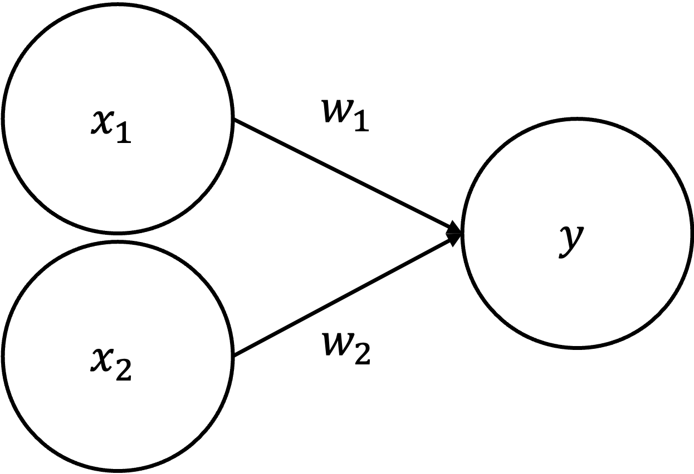
上図のパーセプトロンでは,2つのニューロンから発せられた信号(\(x_1,x_2 = 0,1\))がそれぞれ特定の重み付け(\(w_1,w_2\))をされて,yに伝達されている様子が示されています. ここで重みは,それぞれのニューロンからの信号の重要性を表していると考えましょう. 例えば,\(y\)を以下のように定めると,\(y\)は重み付けされた\(x_1,x_2\)が特定の閾値\(\theta\)を超えると\(1\),超えなかった場合は\(0\)を発するという意味になります.
\[ y = \begin{cases} 1 & (w_1x_1 + w_2x_2 > \theta) \\ 0 & (w_1x_1 + w_2x_2 \leq \theta) \end{cases} \]
パーセプトロンはコンピュータの計算における論理演算との関連が深く,論理演算を実装することができます.
例えば,AND演算とOR演算を考えてみましょう. TRUEを1,FALSEを2とした場合のそれぞれの真偽値表は,以下のようになります.
- AND
| \(x_1\) | \(x_2\) | \(~y~\) |
|---|---|---|
| 0 | 0 | 0 |
| 1 | 0 | 0 |
| 0 | 1 | 0 |
| 1 | 1 | 1 |
- OR
| \(x_1\) | \(x_2\) | \(~y~\) |
|---|---|---|
| 0 | 0 | 0 |
| 1 | 0 | 1 |
| 0 | 1 | 1 |
| 1 | 1 | 1 |
このような演算は例えば以下のように\(w_1,w_2,\theta\)を定めると実現できます.
AND
\[ y = \begin{cases} 1 & (x_1 + x_2 > 1) \\ 0 & (x_1 + x_2 \leq 1) \end{cases} \]
OR
\[ y = \begin{cases} 1 & (0.5x_1 + 0.5x_2 > 0.2) \\ 0 & (0.5x_1 + 0.5x_2 \leq 0.2) \end{cases} \]
このとき,例えばOR演算を実装する\(y\)を,\(y = f(w_1x_1+w_2x_2)\) として,
\[ f(x) = \begin{cases} 1 & (x > 0.2) \\ 0 & (x \leq 0.2) \end{cases} \]
のように表すことができます. このような特定のニューロンの発火の有無を決める関数を活性化関数(activation function)と呼びます.
パーセプトロンでは,活性化関数として,特定の閾値に重み付け入力合計値が達するか否かによって出力が0か1のいずれかになります.このような,0/1が特定の閾値で極端に切り替わる関数をステップ関数,階段関数などと呼びます.
1.2 ニューラルネットワークの構成
これまでに説明してきたのパーセプトロンは最初の\(x_1,x_2\)からなる0層と入力を受け取る\(y\)の2層から構成されていますが,ニューロンの数や,層の数を増やして様々な複雑な条件を表現することが可能になります.
基本的なニューラルネットワークではネットワークを入力層,隠れ層,出力層の3層に分類します.
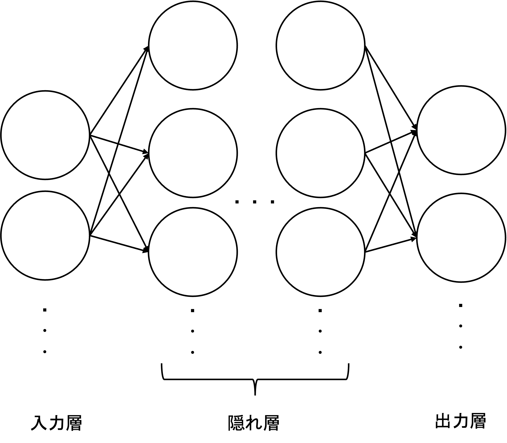
ここで中間層においてn個の入力ニューロン\((x_1,x_2,...,x_n)\)からy個の出力ニューロン\((y_1,y_2,...,y_m)\)に入力がある場合,各出力ニューロンの発火条件は以下のように行列形式で表現されます.
\[ \begin{align*} &Y = f(WX + B) \\ &W: 重み行列 ; (m \times n) \\ &X: 入力ベクトル ; (n \times 1) \\ &B: バイアスベクトル ; (m \times 1) \\ &f: 活性化関数（要素ごとに適用される非線形関数） \\ &Y: 出力ベクトル ; (m \times 1) \\ \end{align*} \]
具体的には, 重み行列 \(W\), 入力ベクトル \(X\), バイアスベクトル \(B\) を以下のように定義します.
各入力ニューロン \(x_i\) から出力ニューロン \(y_j\) への接続には重みが存在し, それを \(w_{ij}\) とします. このとき, 重み行列 \(W\) は次のように表されます:
\[ W = \begin{bmatrix} w_{11} & w_{12} & \cdots & w_{1n} \\ w_{21} & w_{22} & \cdots & w_{2n} \\ \vdots & \vdots & \ddots & \vdots \\ w_{m1} & w_{m2} & \cdots & w_{mn} \end{bmatrix} \]
入力ベクトル X : \[ X = \begin{bmatrix} x_1 \\ x_2 \\ \vdots \\ x_n \end{bmatrix} \]
バイアスベクトル B : \[ B = \begin{bmatrix} b_1 \\ b_2 \\ \vdots \\ b_m \end{bmatrix} \]
出力ベクトル Y : \[ Y = \begin{bmatrix} y_1 \\ y_2 \\ \vdots \\ y_m \end{bmatrix} \]
このとき, 発火条件は活性化関数を利用して以下のように計算されます.
\[ Y = f(WX + B) \]
単純なニューラルネットワークでは, 隠れ層において, 全てのニューロンが結合している全結合層（Affine Layer）が使用されています. 全結合層は, 行列演算を用いて入力データを重み付けし, バイアスを加算する操作を行います. これにより, ネットワークが入力データの全体的な特徴を学習することが可能になります.
パーセプトロンでは,活性化関数としてステップ関数が利用されており,その出力は必ず0か1でした.
ニューラルネットワークでは,通常, 非線形のシグモイド関数やReLU関数(Rectified Linear Unit function) などが利用され出力が0,1以外の値を取ります.
シグモイド関数
\[ f(x) = \frac{1}{1+exp(-x)} \]
出力を0～1の範囲にマッピングするため, 確率を表現する場面で使われることがあります.
ReLu
\[ f(x) = \begin{cases} x & (x > 0) \\ 0 & (x \leq 0) \end{cases} \]
ReLUは計算が効率的で, 学習を早める効果があるため, 現在最も広く利用されている活性化関数です.
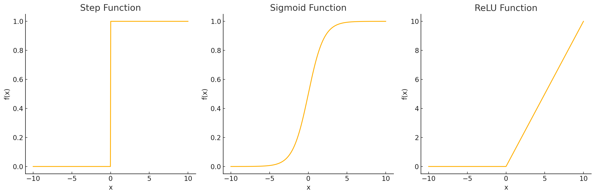
出力層では, 解きたい問題の性質に応じて適切な活性化関数が選択されます.
1. 回帰問題（数値を予測する場合）:出力層には恒等関数（Identity Function）が使用されます. この場合, 出力はそのまま数値として扱われます.
\[ f(x) = x \]
2. 分類問題（カテゴリを予測する場合）:出力層にはSoftmax関数が使用されることが一般的です. Softmax関数は, 出力を確率分布に変換します.
\[ f(x_i) = \frac{e^{x_i}}{\sum_{j} e^{x_j}} \\ \]
\(x_i\) : i番目の出力ニューロンの値,\(f(x_i)\) : i 番目のカテゴリの確率,\(\sum_j f(x_j)\) = 1 : 全てのカテゴリの確率の総和が1になる.
Softmax関数は, 手書き文字認識や画像分類タスクのように, 複数のクラスを予測する場面で広く使われています.
これらのレイヤによって一般的なニューラルネットワークは以下のようなレイヤとして表せます.
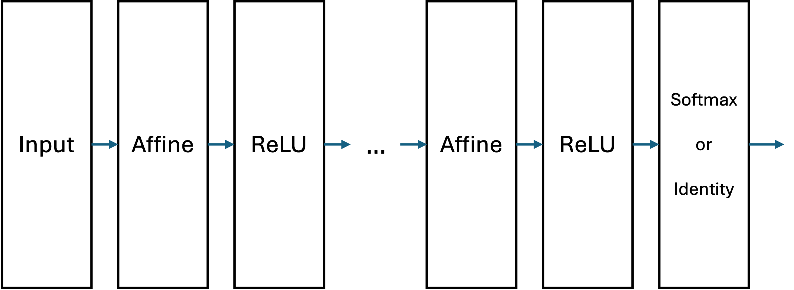
1.3 ニューラルネットワークの学習
パーセプトロンはそれぞれの重みを人間が設定する必要がありました.しかし,複雑な条件を満たすネットワークの重みを人間が設定するのは現実的ではありません.そこで,それぞれの重みを機械学習によってデータから自動で学ぶようにしたものがニューラルネットワークです.
ニューラルネットワークの学習では,ネットワーク内の重み \((w_1, w_2, \dots, w_n)\) とバイアス (\(b\)) の値を適切に調整することで,モデルが入力データから期待される出力を生成できるようにします.このプロセスは次の手順で進行します.
順伝播と損失関数の計算
入力データをネットワークに通し,各層のニューロンで計算が行われ,最終的な出力が生成されます. この出力は予測値として解釈されます. このようなデータにに基づく計算の過程を順伝播（Forward Propagation）といいます.
例えば,手書きの0~9の数字を認識するタスクでは \(m \times n\) ピクセルの画像データが入力され、最終出力層で0~9のいずれかを予測します.
学習のためにはネットワークの予測値と実際の正解データとの差を数値化して,より良い重みを発見する必要があります.その際の予測値と正解データとの差を数値化するための関数を損失関数と呼びます.この損失関数は、ネットワークがどれだけ誤った予測をしているかを示す指標となります。
一般的な損失関数の例:
• 平均二乗誤差 (Mean Squared Error, MSE): 回帰タスクで使用\[ L = \frac{1}{N} \sum_{i=1}^{N} (y_i - \hat{y}_i)^2 \]
交差エントロピー損失 (Cross-Entropy Loss): 分類タスクで使用\[ L = -\sum_{i=1}^{N} y_i \log(\hat{y}_i) \]
ここで,\(y_i\)は正解ラベル, \(\hat{y}_i\) は予測値を示します.
逆伝播と重みの修正
ニューラルネットワークはでは損失関数を基に, 誤差をネットワーク内で逆方向に伝播させ, 各ニューロンの重みとバイアスを更新する手法します. これを,誤差逆伝播法(Backpropagation)といいます.このとき, 微分を用いて重みやバイアスがどの程度影響を与えるかを計算します.
- 勾配降下法（Gradient Descent）逆伝播によって得られた勾配を用いて, 重みとバイアスを更新する手法の最も基本的なものとして勾配降下法があります
\[ W_{new} = W_{old} - \eta \frac{\partial L}{\partial W} \]
ここで,\(L\) : 損失関数（誤差を表す関数）,\(y_i\):正解ラベル,\(\hat{y}_i\) :予測値,\(\frac{\partial L}{\partial W}\) : 重み \(W\) に関する損失関数の勾配,\(\eta\) : 学習率（Learning Rate） 重みの更新量を決定する定数です.
例として, シンプルな1次元関数の最小化を考えます. \[L(w) = (w - 2)^2\] ここで, 最小値は \(w = 2\) です.
- 初期値を \(w = 0\) , 学習率を \(\eta = 0.1\) とします.
- 勾配を計算します:
\[\frac{\partial L}{\partial w} = 2(w - 2)\] 初期値 \(w = 0\) のとき, \[\frac{\partial L}{\partial w} = -4 \]
- 重みを更新します: \[w_{new} = w_{old} - \eta \cdot \frac{\partial L}{\partial w} \] \[w_{new} = 0 - 0.1 \cdot (-4) = 0.4 \]
この処理を繰り返していくと重みは理論的な最小値の2に近づいていきます.
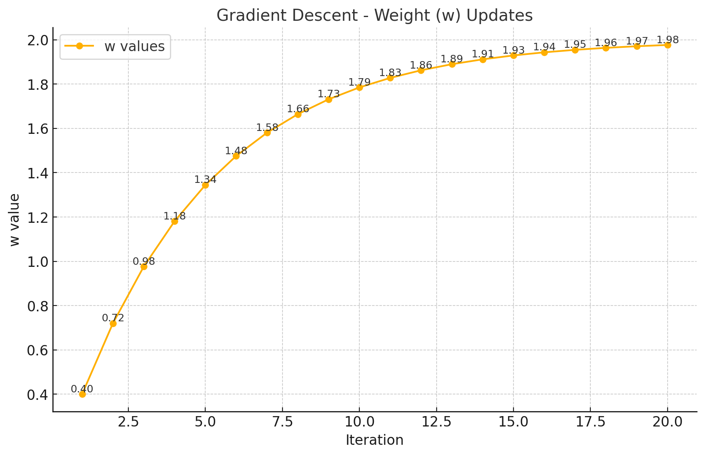
繰り返し学習
順伝播, 損失計算, 逆伝播のプロセスを繰り返し, ネットワークが徐々にデータの特徴を学習します. この反復的なプロセスをエポック（Epoch）と呼びます. 十分なエポックを実行することで, モデルは訓練データに対して高い精度を達成することが期待されます.
学習では, 全てのデータを一度に処理するのではなく, バッチ処理（Batch Processing） と呼ばれる手法を使用するのが一般的です. データセットをいくつかの小さなグループ（バッチ）に分割し, 各バッチごとに順伝播と逆伝播を実行します.
データセットをいくつかの小さなバッチに分割して処理する手法を ミニバッチ学習（Mini-Batch Learning）といい,メモリの使用料を抑え,またGPUの並列処理能力を最大限に利用できるという実施上の利点と,ゼータ全体を満遍なく学習することで,勾配のばらつきが抑えられるという学習能力面の利点もあります.
例えば, データセットが10,000個のサンプルで構成されている場合, バッチサイズを100に設定すると, モデルは100個のデータを1つのバッチとして扱い, 全部で100のバッチを処理することになります. 1エポックでは100回の更新が行われ, これを複数回繰り返して学習が進行します.
ミニバッチ学習はモデルの効率的な学習とメモリ使用量のバランスを取るため, 実務で最も一般的に使われています. 例えば, バッチサイズを32や64に設定することが多いです.
2 画像認識
こちらの節では, ニューラルネットワークの一種である,畳み込みニューラルネットワークを利用して画像認識処理を試してみます. 画像認識や,本資料では扱いませんが音声認識などのニューラルネットワークモデルでは基本的に畳み込みニューラルネットワーク（Convolutional Neural Network, CNN）が用いられています.
基本的なニューラルネットワークは,入力層,AffineレイヤとReLUなどの活性化関数による隠れ層,Softmax関数などによる出力層から構成されていました.
全結合層（Affine Layer）は, 入力データ内の全てのニューロンが次の層の全てのニューロンと結合する構造を持っています. これは言い換えれば,全ての入力を1次元ベクトルに変換することを意味しています.しかし,例えば画像データは,縦・横・チャンネル方向(RGBなら3チャンネル)の三次元の構造を持ちます. 例えば, 28ピクセル×28ピクセルのグレースケール画像(1チャンネル)の場合は, \(28 \times 28 \times 1\)という構造になります.
したがって,画像認識などの問題に対してAffine層を導入することは 画像や音声のようなデータの空間的構造を無視することになりますこれにより, データの位置や局所的な特徴を効果的に捉えることが困難になります.
そこでCNNでは畳み込み層(Convolution Layer)とプーリング層(Pooling Layer)を加えることでデータの空間的構造を適切に取り込みます.
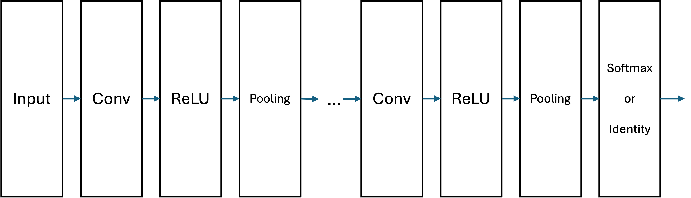
畳み込み層（Convolution Layer）
畳み込み層は, 入力データ\(I\)に対してフィルタ（カーネル）\(K\) を適用して特徴マップ\(F\)を生成します. 畳み込み演算は次の数式で表されます:
\[ F(x, y) = \sum_{i=1}^{m} \sum_{j=1}^{n} I(x+i, y+j) \cdot K(i, j) \]
ここで: \(I(x, y)\) : 入力画像のピクセル値（例: グレースケール画像の場合0～255の値）, \(K(i, j)\) : フィルタ（カーネル）の要素, \(m \times n\) : フィルタのサイズ（例: \(3 \times 3\) ）.
畳み込みの結果はフィルタが滑らかに適用されることで, 画像内の特徴（エッジや模様など）を抽出します.
例として,\(4 \times 4\)のグレースケール画像を考えます.各要素は0～255のピクセル値を持ちます.
入力画像 I :
\[ I = \begin{bmatrix} 1 & 2 & 3 & 0 \\ 0 & 1 & 2 & 3 \\ 1 & 0 & 1 & 2 \\ 2 & 1 & 0 & 1 \end{bmatrix} \]
フィルタ K :
\[ K = \begin{bmatrix} 1 & 0 & -1 \\ 1 & 0 & -1 \\ 1 & 0 & -1 \end{bmatrix} \]
このフィルタは垂直方向のエッジ(輪郭)を検出するためのカーネルとしてよく使われます.
2.1 畳み込み演算のプロセス
畳み込み演算では,フィルタ K を入力画像 I に適用し、以下の手順を繰り返します：
1. フィルタ K を入力画像 I の一部（局所領域）に重ね合わせます.
2. 対応する要素同士を掛け算し,その結果を合計します.
3. 合計値を特徴マップ F の対応する位置に記録します.
4. フィルタをストライド（移動量）分ずらして次の位置に移動し,同様の計算を繰り返します.ストライド: 1 （1ピクセルずつ移動） 出力特徴マップ F : 入力画像が \(4 \times 4\) , フィルタサイズが \(3 \times 3\) , ストライドが 1 の場合,出力特徴マップのサイズは以下で計算されます.
\[ F_{\text{Size}} = \left( I_{\text{Size}} - K_{\text{Size}} \right) / \text{Stride} + 1 \]
\[ F_{\text{Size}} = (4 - 3) / 1 + 1 = 2 \]
したがって,出力特徴マップ F のサイズは \(2 \times 2\) になります.
畳み込み演算の計算手順
ステップ1: フィルタを左上に適用入力画像の左上 \(3 \times 3\) 領域：
\[ \begin{bmatrix} 1 & 2 & 3 \\ 0 & 1 & 2 \\ 1 & 0 & 1 \end{bmatrix} \]
フィルタ K を適用：
\[ F(1, 1) = \begin{bmatrix} 1 & 2 & 3 \\ 0 & 1 & 2 \\ 1 & 0 & 1 \\ \end{bmatrix} \cdot \begin{bmatrix} 1 & 0 & -1 \\ 1 & 0 & -1 \\ 1 & 0 & -1 \end{bmatrix} \\ = (1 \cdot 1) + (0 \cdot 2) + (-1 \cdot 3) + (1 \cdot 0) + (0 \cdot 1) + (-1 \cdot 2) + (1 \cdot 1) + (0 \cdot 0) + (-1 \cdot 1) \\ = 1 + 0 - 3 + 0 + 0 - 2 + 1 + 0 - 1 = -4 \]
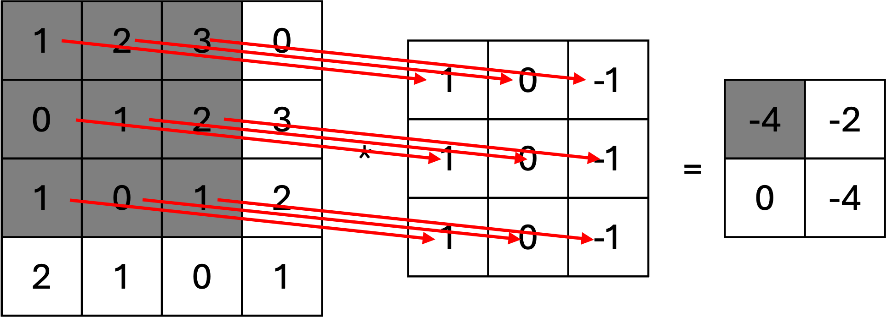
ステップ2: フィルタを右に1つ移動次に,フィルタを右に1つ移動させて適用します。
入力画像の次の領域：
\[ \begin{bmatrix} 2 & 3 & 0 \\ 1 & 2 & 3 \\ 0 & 1 & 2 \end{bmatrix} \]
フィルタ K を適用： \[ F(1, 2) = \begin{bmatrix} 2 & 3 & 0 \\ 1 & 2 & 3 \\ 0 & 1 & 2 \\ \end{bmatrix} \cdot \begin{bmatrix} 1 & 0 & -1 \\ 1 & 0 & -1 \\ 1 & 0 & -1 \end{bmatrix} = -2 \]
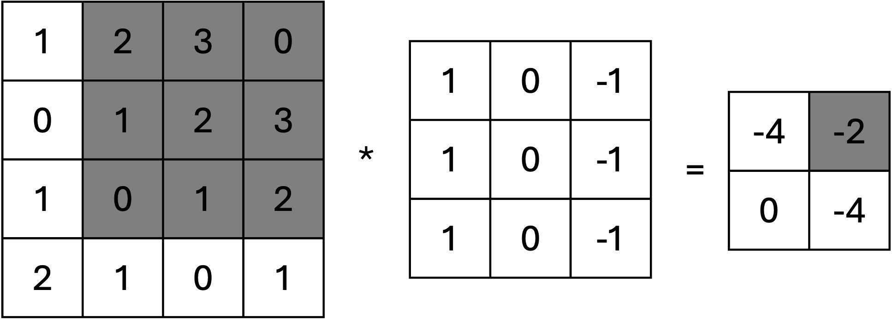
ステップ3: フィルタを下に移動
フィルタを下に移動して適用します。
入力画像の次の領域： \[ \begin{bmatrix} 0 & 1 & 2 \\ 1 & 0 & 1 \\ 2 & 1 & 0 \end{bmatrix} \]
フィルタ K を適用：
\[ F(2, 1) = \begin{bmatrix} 0 & 1 & 2 \\ 1 & 0 & 1 \\ 2 & 1 & 0 \\ \end{bmatrix} \cdot \begin{bmatrix} 1 & 0 & -1 \\ 1 & 0 & -1 \\ 1 & 0 & -1 \end{bmatrix} = 0 \]
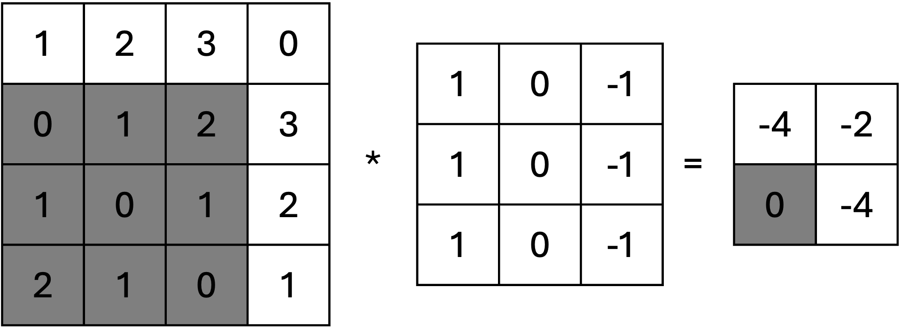
ステップ4: フィルタを右下に移動
最後に、フィルタを右下に移動して適用します。
入力画像の次の領域： \[ \begin{bmatrix} 1 & 2 & 3 \\ 0 & 1 & 2 \\ 1 & 0 & 1 \end{bmatrix} \]
同様に計算すると：
\[ F(2, 1) = \begin{bmatrix} 1 & 2 & 3 \\ 0 & 1 & 2 \\ 1 & 0 & 1 \end{bmatrix} \cdot \begin{bmatrix} 1 & 0 & -1 \\ 1 & 0 & -1 \\ 1 & 0 & -1 \end{bmatrix} = -4 \]
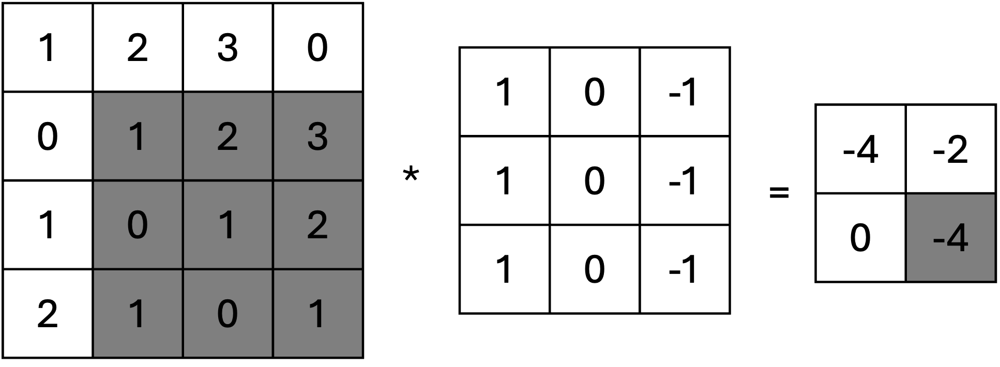
特徴マップの結果
畳み込み演算の結果として得られる特徴マップ F は次の通りです：
\[ F = \begin{bmatrix} -4 & -2 \\ 0 & -2 \end{bmatrix} \]
実際にこの事例の画像にカーネルを適用すると以下のようになりますが,単純すぎて良くわからないので,我が家の犬の画像をグレースケールにしたものをにこのカーネルを適用したものが次の画像になります. 物体の垂直方向のエッジ(輪郭)のみが強調されていることが分かります.
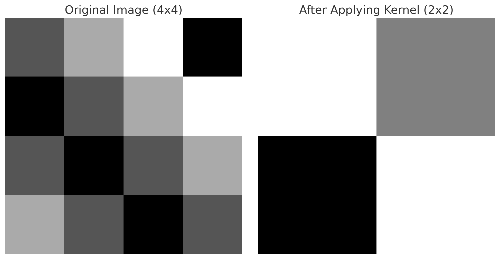
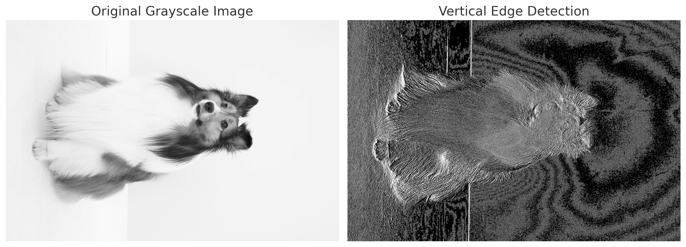
ここでは,取り上げませんが,他の代表的なカーネルとして以下のようなものがあります.
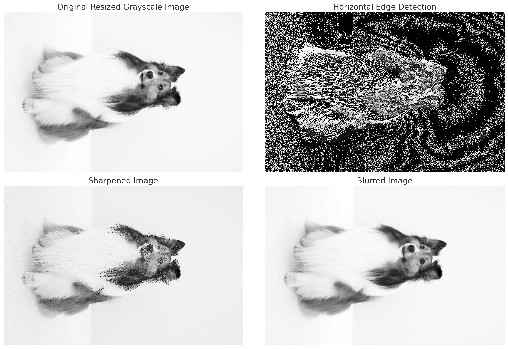
2.2 水平エッジ検出カーネル (Horizontal Edge Detection Kernel)
\[ K_{\text{horizontal}} = \begin{bmatrix} 1 & 1 & 1 \\ 0 & 0 & 0 \\ -1 & -1 & -1 \end{bmatrix} \]
このカーネルは、画像内の水平方向のエッジを検出します. 上部の値（ +1 ）と下部の値（ -1 ）が異なるため、明るい領域と暗い領域の境界を強調します. 例えば,地平線や階段の段差などの水平線を抽出するのに適しています.
2.3 シャープ化カーネル (Sharpen Kernel)
行列表記:
\[ K_{\text{sharpen}} = \begin{bmatrix} 0 & -1 & 0 \\ -1 & 5 & -1 \\ 0 & -1 & 0 \end{bmatrix} \]
中央の値（ 5 ）が高く, 周囲の値（ -1 ）が低いことで, 隣接するピクセルとの差を強調します. これにより, 画像のエッジやディテールが際立ちます. 一般的に, エッジを目立たせたい場合やぼやけた画像を鮮明化する際に使用されます.
2.4 ぼかし（ブラー）カーネル (Blur Kernel)
\[ K_{\text{blur}} = \frac{1}{9} \begin{bmatrix} 1 & 1 & 1 \\ 1 & 1 & 1 \\ 1 & 1 & 1 \end{bmatrix} \]
このカーネルは, 隣接するピクセルの平均値を計算して, 画像全体を滑らかにします. ピクセル間の明るさの差を緩和し, ノイズの低減に役立ちます. 例えば, 背景の処理やノイズの軽減などに使用されます.
このようにフィルタの形状や内容に応じて異なる特徴(エッジ,模様など)を捉えることが可能です. この畳み込みフィルタの各セルの値が,これまでのニューラルネットワークにおける重み\(W\)のように作用し,CNNではその値が学習の対称となります.
- プーリング層（Pooling Layer）
プーリング層は, 特徴マップのサイズを縮小し, 計算量を減らすと同時に, 特徴の不変性を高める役割を持ちます. 例えば, 最大プーリング（Max Pooling）は次の式で表されます:
\[ P(x, y) = \max_{i=1}^{m} \max_{j=1}^{n} F(x+i, y+j) \]
ここで: \(F(x, y)\): 入力特徴マップ,\(P(x, y)\): プーリング後の特徴マップ,\(m \times n\): プーリングウィンドウのサイズ（例: 2 ）.
最大プーリングは, 各ウィンドウ内の最大値を取得することで, 特徴の最も重要な部分を抽出します. 画像中のエッジや高輝度部分を強調するのに適しています.
例: 入力データ \(4 \times 4\) の行列に対し, \(2 \times 2\) のウィンドウサイズで最大プーリングを適用します.
入力行列:
\[ I = \begin{bmatrix} 1 & 3 & 2 & 1 \\ 4 & 6 & 5 & 0 \\ 7 & 8 & 9 & 2 \\ 3 & 4 & 1 & 6 \end{bmatrix} \]
手順: 各 \(2 \times 2\) のウィンドウ内の最大値を取り, 縮小された行列を生成します. 1. 最初の \(2 \times 2\) ウィンドウ: \[ \begin{bmatrix} 1 & 3 \\ 4 & 6 \end{bmatrix} \quad \text{最大値: } 6 \]
\[ \begin{bmatrix} 2 & 1 \\ 5 & 0 \end{bmatrix} \quad \text{最大値: } 5 \]
\[ \begin{bmatrix} 7 & 8 \\ 3 & 4 \end{bmatrix} \quad \text{最大値: } 8 \]
\[ \begin{bmatrix} 9 & 2 \\ 1 & 6 \end{bmatrix} \quad \text{最大値: } 9 \]
出力行列:
\[ P_{\text{max}} = \begin{bmatrix} 6 & 5 \\ 8 & 9 \end{bmatrix} \]
CNNの全体的なデータフローを数式でまとめると次のようになります:
1. 畳み込み層:\[ F^{(l)} = f(W^{(l)} * F^{(l-1)} + b^{(l)}) \]
\(W^{(l)}\) : 畳み込みフィルタ（重み）,\(F^{(l-1)}\) : 前層の特徴マップ,\(b^{(l)}\) : バイアス,\(f\) : 活性化関数（例: ReLU）.
2. プーリング層:\[ P^{(l)} = \text{Pooling}(F^{(l)}) \]
3. 全結合層:\[ Y = \text{Softmax}(WX + B) \]
W : 全結合層の重み行列,X : プーリング層の出力,B : バイアス.
このように, CNNは畳み込み層で特徴を抽出し, プーリング層でデータの次元を縮小し, 全結合層で最終的な予測を行います. これらの操作が連続的に行われることで, 画像や音声などのデータの複雑なパターンを学習することが可能になります.
2.5 代表的なCNNモデル
CNNを利用した主な画像認識モデルの歴史は以下のようにまとめられます.
| 年代 | モデル名 | 特徴・概要 | 主な貢献や革新点 |
|---|---|---|---|
| 1998 | LeNet | 手書き数字認識に使われた初期のCNNモデル. 主にMNISTデータセットで使用. | 畳み込み層とプーリング層を使用した初期の画像認識モデル. |
| 2012 | AlexNet | ImageNetで初めて畳み込みニューラルネットワークを使用し,トップ5エラー率を大幅に改善. | ReLU活性化関数の使用や,GPUによるトレーニングの導入. |
| 2014 | VGGNet | 小さな3x3のフィルタを多層に積み重ねたアーキテクチャ.VGG16とVGG19が特に有名. | モデルの深さが精度に大きく寄与することを示す. |
| 2014 | GoogLeNet (Inception) | “Inception Module”を採用し,計算効率と精度を両立. | 異なるサイズの畳み込みフィルタを同時に適用するInceptionモジュール. |
| 2015 | ResNet | 残差ブロックを使用し,非常に深いネットワークのトレーニングを可能に.ImageNetで優勝. | 152層の深いネットワークで,勾配消失問題を解決. |
| 2016 | DenseNet | 各層がすべての前層からの入力を受け取る密結合アーキテクチャ. | パラメータ効率が良く,勾配の流れが改善される. |
| 2017 | Xception | 畳み込みの代わりに「深さ方向の畳み込み（Depthwise Separable Convolutions）」を使用. | 計算コストの削減と精度の向上. |
| 2017 | MobileNet | 軽量かつ効率的なCNNアーキテクチャ.モバイルデバイス向けに最適化. | 計算量を削減し,モバイル環境でのリアルタイム推論を可能に. |
| 2020 | Vision Transformer (ViT) | 画像をパッチに分割し,トランスフォーマーアーキテクチャを使用したモデル. | トランスフォーマーモデルが画像認識タスクでも有効であることを示す. |
| 2021 | Swin Transformer | 階層的なトランスフォーマーアーキテクチャで,局所的な窓（ウィンドウ）を用いた画像認識モデル. | トランスフォーマーのスケーラビリティを改善し,高い精度を達成. |
| 2022 | ConvNeXt | Vision Transformerのアイデアを取り入れた畳み込みネットワークの進化版. | 畳み込みベースのモデルが再び最先端性能を達成できることを示す. |
今回は,事例としてConvNeXtを利用した画像認識を実行してみます.
ConvNeXtは,Meta(旧Facebook)によって発表されたモデルで,Swin Transformer を参考にしつつResNet（Residual Network）を基盤として作られたCNNです.
ConvNeXtでは畳み込み層にDepthwise Convolutionを用いています. これは畳み込み処理を入力画像のチャンネル事に独立して計算する手法です.通常の畳み込みでは,入力画像の複数チャンネルを同時に処理するため計算コストが大きくなります.一方, Depthwise Convolutionでは, 1つのチャンネルに対して1つのフィルタで畳み込みを行い, それを全チャンネル分繰り返した後に, 別の1x1畳み込み(これをPointwise Convolutionと呼ぶことが多い)でチャネル間情報を組み合わせます. これにより演算コストと性能向上を両立したのがConvNeXtの大きな特徴になります.
Pooling層では,Adaptive Average Pooling(アダプティブ平均プーリング)を採用しています.
普通の平均プーリングでは, プーリング領域の大きさを固定して画素を平均化しますが, Adaptive Average Poolingは, 「最終的に出力したいサイズ」を指定します. すると, 入力画像がどんなサイズであっても, そのサイズに合わせて自動的に区切り方を調整し, 均等に平均をとってくれます. これにより, 入力画像の解像度が変わっても, ネットワークの最終的な出力ベクトルの大きさを一定に保ちやすくなります.
また,活性化関数としてRELUの発展形であるGELU(Gaussian Error Linear Unit)を採用しています.
\[
GELU(x) = \frac{x}{2} \left[ 1 + erf(\frac{x}{\sqrt{2}}) \right]
\]
ここで\(erf(x)\)は誤差関数(error function)と呼ばれる関数です.
\[ erf(x) = \frac{2}{\sqrt{x}}\int_{0}^{x} e^{-t^2} dt \]
GELUは, 入力が小さい(特に0より負側)場合には出力を小さく抑え, 入力が大きくなるにつれて徐々に出力を増やしていく, なめらかな活性化関数です. ReLUと比較すると, 入力が0付近で緩やかに変化するため, 勾配が急に0になることがなく, 学習を安定させる効果が期待できます. つまり, 「入力値がある程度以上大きい場合は強く反応し, 入力値が小さい場合はあまり反応しない」ことをなめらかに表現する非線形関数です.
PythonのCNNのライブラリはいくつか存在しますが,ConvNeXtは,Metaによって開発されたPyTorch上で実装されています.
2.6 顔による年齢識別
事例として顔画像からの年齢識別を行ってみましょう. データとして,16歳から62歳までの2,000人の有名人の160,000以上の画像が含まれるデータセットCross-Age Celebrity Dataset (CACD)を用います.
The dataset metadata only can be downloadedをクリックしてメタデータを, Original face images (detected and croped by openCV face detector) can be downloadedをクリックして画像データをダウンロードしてください(3Gあるので通信環境に注意).
CACD2000.tar.gzは展開して,celebrity2000_meta.matとともにプログラムを配置するディレクトリ内のdataディレクトリに保存しておきましょう.
2.6.1 画像ファイルの形式
機械学習において利用されるラベル付き画像データの形式はいくつかあるが,CACDのような.matファイル,画像とCSVなどのラベルの組み合わせ,ラベル名フォルダ別の画像ファイルなどのパターンが存在する. いずれにも対応できるようにしておく必要があるが, この資料では最も単純な最後のラベル別に名前がつけられたフォルダに保存された画像ファイルを扱う.
先ほどダウンロードしたcelebrity2000_meta.matは,メタデータのみが含まれており,画像は別になっています.メタデータに従って,年齢別に画像をフォルダに保存してみましょう.
> ls
face_image.py
data
> ls data
CACD2000
celebrity2000_meta.mat.matファイル- MATLABのファイル
- 基本的には
scipyを利用して読み込む. - フォーマット形式がMATLAB
v7.3の場合には,HDF5を扱うライブラリh5pyを利用する. HDF5(Hierarchical Data Froamt version 5)はディレクトリ構造に似た階層型のデータフォーマット
まずは,h5pyを利用してcelebrity2000_meta.matを読み込み,中身を確認してみましょう.
以下のライブラリが必要になるので pip installしておいてください.
pytorch- CNN用ライブラリ(PyTorch)
torchvision- PyTorchの画像,動画処理用ライブラリ
scipyh5pypillow- 画像処理用ライブラリ
shutil- ファイル操作用ライブラリ
import h5py #HDF5を扱うライブラリ
from PIL import Image #画像の表示/保存/書き込みなどを扱うライブラリ
import os
import numpy as np
import scipy.io
#画像データの保存先
image_dir = 'data/CACD2000'
# .matファイルの読み込み（古い形式の場合）
## 辞書型として読み込まれる
file = scipy.io.loadmat('data/celebrity2000_meta.mat')
# 辞書のKeyを表示する
print('keys:',file.keys())
# >>> dict_keys(['__header__', '__version__', '__globals__', 'celebrityData', 'celebrityImageData'])
#celebrityImageDataの確認
print(file['celebrityImageData'])
"""
[[(array([[53],
[53],
[53],
...,
[23],
[23],
[23]], dtype=uint8), array([[ 1],
[ 1],
[ 1],
...,
[2000],
[2000],
[2000]], dtype=uint16), array([[2004],
[2004],
[2004],
...,
[2013],
[2013],
[2013]], dtype=uint16), array([], shape=(0, 0), dtype=uint8), array([[ 1],
[ 1],
[ 1],
...,
[50],
[50],
[50]], dtype=uint8), array([[1],
[1],
[1],
...,
[0],
[0],
[0]], dtype=uint8), array([[1951],
[1951],
[1951],
...,
[1990],
[1990],
[1990]], dtype=uint16), array([[array(['53_Robin_Williams_0001.jpg'], dtype='<U26')],
[array(['53_Robin_Williams_0002.jpg'], dtype='<U26')],
[array(['53_Robin_Williams_0003.jpg'], dtype='<U26')],
...,
[array(['23_Katie_Findlay_0011.jpg'], dtype='<U25')],
[array(['23_Katie_Findlay_0012.jpg'], dtype='<U25')],
[array(['23_Katie_Findlay_0013.jpg'], dtype='<U25')]], dtype=object)) ]]
"""
# 7個目に画像のファイル名が入っているので
# celebrityImageDataから画像ファイル名を抽出
image_data = file['celebrityImageData']
jpg_files = [str(image_name[0][0]) for image_name in image_data[0][0][7]]
# 抽出された.jpgファイル名のリストを上から10個表示
print(jpg_files[:10])
# 画像データの取得と表示
## 名前データを利用して画像をいくつか開いてみます.
for n in jpg_files[:10]:
img_path = os.path.join(image_dir, n) # パスを結合し,ファイル名を取得
if os.path.exists(img_path):
img = Image.open(img_path) # 画像ファイルを開く
img.show() # 画像を表示
else:
print(f"Image file not found: {img_path}")
#>>> 画像が表示されます- HDF5の利用例
CACDデータのうち一番上のThe dataset metadata and features used in this paperからダウンロードできるcelebrity2000.matは,HDF5のデータとなっているため,scipyで読み込んでみるとエラーが出ます.
file = scipy.io.loadmat('data/celebrity2000.mat')
"""
Traceback (most recent call last):
File "/Users/akagi/Desktop/face_image.py", line 86, in <module>
file = scipy.io.loadmat('data/celebrity2000.mat')
^^^^^^^^^^^^^^^^^^^^^^^^^^^^^^^^^^^^^^^^^^
File "/Users/akagi/.pyenv/versions/3.12.3/lib/python3.12/site-packages/scipy/io/matlab/_mio.py", line 226, in loadmat
MR, _ = mat_reader_factory(f, **kwargs)
^^^^^^^^^^^^^^^^^^^^^^^^^^^^^^^
File "/Users/akagi/.pyenv/versions/3.12.3/lib/python3.12/site-packages/scipy/io/matlab/_mio.py", line 80, in mat_reader_factory
raise NotImplementedError('Please use HDF reader for matlab v7.3 '
NotImplementedError: Please use HDF reader for matlab v7.3 files, e.g. h5py
"""今回はcelebrity2000_meta.matを利用するので必要ありませんが,試しに同じように画像を表示してみましょう.
HDF5は多重の辞書型ような構造をしており,keyによってデータにアクセスできます.
import h5py #HDF5を扱うライブラリ
from PIL import Image #画像の表示/保存/書き込みなどを扱うライブラリ
import os
import numpy as np
# .matファイル(HDF5)の読み込み
with h5py.File('data/celebrity2000.mat', 'r') as file:
# List all keys in the .mat file
print('keys:',list(file.keys()))
# >>> keys: ['#refs#', 'celebrityData', 'celebrityImageData']
## ラベルの確認
print('DataKeys:',file['celebrityImageData'].keys())
# >>> DataKeys: <KeysViewHDF5 ['age', 'birth', 'feature', 'identity', 'lfw', 'name', 'rank', 'year']>
# 年齢データの確認
print('age:',file['celebrityImageData']['age'])
# >>> age: <HDF5 dataset "age": shape (1, 163446), type "<f8">
print('age:',file['celebrityImageData']['age'][0])
# >>> age: [53. 53. 53. ... 23. 23. 23.]
# 名前データの確認
print('name:',file['celebrityImageData']['name'])
# >>> name: <HDF5 dataset "name": shape (1, 163446), type "|O">
print('name:',file['celebrityImageData']['name'][0])
# >>> name: [<HDF5 object reference> <HDF5 object reference> <HDF5 object reference>
#... <HDF5 object reference> <HDF5 object reference>
#<HDF5 object reference>]
# ↑ <HDF5 object reference>は他のHDF5オブジェクトへの参照 #refs#に入っている.
# nameデータを参照して表示
name_references = file['celebrityImageData']['name'][0]
names = []
for ref in name_references:
name = file[ref][()].tobytes().decode('utf-16') # utf-16でデコード
names.append(name)
# 最初の10件の名前を表示
print('names:', names[:10])
# names: ['53_Robin_Williams_0001.jpg'
# , '53_Robin_Williams_0002.jpg'
# , '53_Robin_Williams_0003.jpg'
# , '53_Robin_Williams_0004.jpg'
# , '53_Robin_Williams_0005.jpg'
# , '53_Robin_Williams_0006.jpg'
# , '53_Robin_Williams_0007.jpg'
# , '53_Robin_Williams_0009.jpg'
# , '53_Robin_Williams_0010.jpg'
# , '53_Robin_Williams_0011.jpg']
# 画像データの取得と表示
## 名前データを利用して画像をいくつか開いてみます.
for n in names[:10]:
img_path = os.path.join(image_dir, n) # パスを結合し,ファイル名を取得
if os.path.exists(img_path):
img = Image.open(img_path) # 画像ファイルを開く
img.show() # 画像を表示
else:
print(f"Image file not found: {img_path}")
# >>> 画像が表示される同じ用にデータを抽出できることが確認できます.
それでは,celebrity2000_meta.matから年齢別にフォルダを分けて画像を保存してみます.年齢区分は,10,20,…,100としてみましょう. 画像ファイル名の先頭の数字が年齢を表しているので,そちらを利用しても構いませんが,せっかくなのでメタデータを利用してみましょう. 年齢はimage_data[0][0][0]に入っているようです.
研究であれば画像データの枚数は多いほど良いですが, 今回は一通りの流れを体験してみることが目的なので学生の環境でも利用しやすいように各年代200枚だけコピーします.
import os
import shutil
import scipy.io
from collections import defaultdict
import random
# 画像ディレクトリの設定
image_dir = 'data/CACD2000'
output_dir = 'data/sorted_images'
# .matファイルの読み込み
file = scipy.io.loadmat('data/celebrity2000_meta.mat')
# celebrityImageDataから年齢と画像ファイル名を抽出
image_data = file['celebrityImageData']
# 年齢情報
ages = image_data[0][0][0].flatten()
# 画像ファイル名
jpg_files = [str(image_name[0][0]) for image_name in image_data[0][0][7]]
# 年齢と画像ファイルをペアにする
age_image_pairs = list(zip(ages, jpg_files))
# 年代ごとの画像カウント
age_group_counts = defaultdict(int)
# 年齢別に画像をシャッフル
random.shuffle(age_image_pairs)
# 年齢別のフォルダに画像をコピー（各年代最大200枚）
for age, jpg_file in age_image_pairs:
age_group = (age // 10) * 10
if age_group > 100:
age_group = 100 # 100代以上は100代フォルダに保存
# 各年代ごとに200枚までコピー
if age_group_counts[age_group] < 200:
folder_path = os.path.join(output_dir, f'{age_group}s')
os.makedirs(folder_path, exist_ok=True)
src_path = os.path.join(image_dir, jpg_file)
dst_path = os.path.join(folder_path, jpg_file)
shutil.copy(src_path, dst_path)
age_group_counts[age_group] += 1結果を確認してみます.
Shell コマンドにおける| はパイプといって head -20は先頭20個のみ
| の左側のコマンドによる標準出力を右側のコマンドに渡すことができます.
今回はls data/sorted_images/10sで表示される結果の,先頭20個のみを表示しています.
> ls data/sorted_images
10s 20s 30s 40s 50s 60s
> ls data/sorted_images/10s |head -20
19_Alison_Pill_0001.jpg
19_Alison_Pill_0002.jpg
19_Alison_Pill_0003.jpg
19_Alison_Pill_0005.jpg
19_Alison_Pill_0006.jpg
19_Alison_Pill_0007.jpg
19_Alison_Pill_0009.jpg
19_Alison_Pill_0011.jpg
19_Amanda_Seyfried_0001.jpg
19_Amanda_Seyfried_0002.jpg
19_Amanda_Seyfried_0004.jpg
19_Amanda_Seyfried_0005.jpg
19_Amanda_Seyfried_0007.jpg
19_Amanda_Seyfried_0008.jpg
19_Amanda_Seyfried_0010.jpg
19_Amanda_Seyfried_0011.jpg
19_Amanda_Seyfried_0013.jpg
19_Amanda_Seyfried_0014.jpg
19_Anna_Kendrick_0002.jpg
19_Anna_Kendrick_0008.jpgデータには10代から60代までのみが含まれていたようです. 各フォルダの中身を確認してもちゃんと保存できていることがわかりますね.
機械学習モデルの性能を評価するためには,学習に利用する訓練用データと,学習の結果を判定するテスト用データに分ける必要があります. 続いて,学習用とテスト用でフォルダに分割してみましょう.
今回は200枚の画像のうち8割(160枚)を学習用,2割(40枚)をテスト用のデータとして利用します.
学習データの分割には, 指定した割合でデータを分割してくれるsklearnのtrain_test_splitを用います.
import os
import shutil
from sklearn.model_selection import train_test_split
data_dir = 'data/sorted_images'
output_dir = 'data/sorted_images_split'
# 画像ファイルのパスを収集し,年齢別に分類
age_groups = ['10s', '20s', '30s', '40s', '50s', '60s']
for age_group in age_groups:
images = os.listdir(os.path.join(data_dir, age_group))
train_images, val_images = train_test_split(images
,test_size=0.2 #2割をテスト用データにする
, random_state=42)
train_dir = os.path.join(output_dir, 'train', age_group)
val_dir = os.path.join(output_dir, 'val', age_group)
os.makedirs(train_dir, exist_ok=True)
os.makedirs(val_dir, exist_ok=True)
for image in train_images:
shutil.copy(os.path.join(data_dir, age_group, image), os.path.join(train_dir, image))
for image in val_images:
shutil.copy(os.path.join(data_dir, age_group, image), os.path.join(val_dir, image))以下のような形でデータが保存されていることを確認しましょう.
data/sorted_images_split
├── train
│ ├── 10s
│ ├── 20s
│ ├── 30s
│ ├── 40s
│ ├── 50s
│ └── 60s
└── val
├── 10s
├── 20s
├── 30s
├── 40s
├── 50s
└── 60s2.6.2 画像認識の実施
CNNを利用した学習を行うにあたって,コード内で扱われる基本的な概念を説明します.
ハイパーパラメータ
機械学習では,プログラムが自動で学習を進めてくれますが,良い性能を達成するためには人間がいくつかのパラメータを設定する必要があります. また,様々な改善手法があるため,モデルが上手く学習できない場合には,それらを経験によって調整していく必要があります.
本資料では,それらの細かな内容にはあまり踏み込みませんが,以下,基本的な処理やパラメータに関して説明します.
前処理(Data Augmentation)
学習を行うために,画像サイズや色の内容と無関係の情報を減らし,画像を統一のフォーマットに揃えます.
- リサイズ (Resize)
画像のサイズを揃えます.今回は224 × 224 ピクセルに統一します.
- 画像反転 (Horizontal Flip)
水平方向に画像を反転させることで,データに多様性を加えます.
- テンソル(Tensor)変換
データの多次元配列をTensorと呼びます. データを,複数の行列によるテンソルに変換することで効率的に学習を行います. 例えば,画像の場合は,高さ,幅,チャンネル数(RGBカラー等の色)の3次元テンソルとして表現します.
- 正規化(Normalize)
画像データを特定の範囲や分布に変換してモデルが効率的に学習できるようにする手法を正規化といいます. CNNで学習される画像データは,0から255の範囲のピクセル値(色や濃淡の数値)で表現されますが,ばらつきが大きすぎると学習が不安定になるため,0から1の範囲に変換します.
なお,正規化に利用されてい平均や標準偏差の値([0.485, 0.456, 0.406])などは,ConvNeXtの学習に用いられている,大規模画像データベースImageNetの平均及び標準偏差です.
実際には,使用するデータの平均及び標準偏差を用いる必要がありますが今回はあくまで事例の紹介であり利用する画像データ毎に変更する必要があるので,便宜的にこの値を利用しています.
テスト用の実装などでは,すべて0.5にするなどもよく行われていますが,本来は変更すべき値であることに注意しましょう.
該当部分(全体のインデントは省略)
# データ変換（前処理）
data_transforms = {
'train': transforms.Compose([
transforms.Resize((224, 224)), #画像のリサイズ
transforms.RandomHorizontalFlip(), #画像をランダムに反転
transforms.ToTensor(), #テンソル(多次元配列)に変換
transforms.Normalize(mean=[0.485, 0.456, 0.406]
,std=[0.229, 0.224, 0.225]), #正規化(本来は値を変更する必要あり.
]),
'val': transforms.Compose([
transforms.Resize((224, 224)),
transforms.ToTensor(),
transforms.Normalize([0.485, 0.456, 0.406]
,[0.229, 0.224, 0.225]),
]),
}この他にも画像の彩度や光度の調整, ランダム回転,スケーリングなど,様々な前処理手法があり,状況に応じて使い分ける必要があります.
バッチ(batch)処理
CNNでは学習用のデータ全てを一度に学習するとメモリを大量に消費するため,データを分割して学習を行います. そのような分割処理をバッチ処理といいます.
分割された一つあたりのデータの数をバッチサイズといいます. バッチサイズが32個の場合は32個の(今回の場合は画像ファイル)を同時に処理します.
また,バッチ処理ではバッチ毎に並列処理を行うため速度面でも,効率的な学習が行えます.
エポック(epoch)数
CNNではモデルの性能を高めるために同じデータセットを何度も繰り返して学習することがあります.その際に,データを1巡して学習する回数を,エポック数といいます. 例えば, 10エポックの場合は,160枚の画像を10回学習することになります.
エポック数を増やすと一般的に性能が高まりすが,多すぎる場合には過学習が起きるので,エポック数を変更してある程度誤差がが安定する適切なエポック数を見つけることが重要です.
また,本資料では利用していませんが,PyTorchには自動で過学習を防ぐために途中で学習を打ち切るEarly Stopping用の機能などもあります.
以下のコードでは,エポック数ごとの誤差を記録して,グラフを出力するようになっています.
損失関数(Loss Function)
学習したモデルの性能を調べるために, モデルの予測と実際のラベルとの誤差(損失)を計算するための関数を損失関数といいます. 基本的に, 損失関数で求められた誤差が大きいほど,モデルの正確性が劣っていることを示します.
損失関数にはいくつかの種類がありますが,今回はクロスエントロピー損失(Coross-Entoropy Loss)を利用します. これは,予測された確率分布と実際のラベルの分布の不一致度を計測しています.
オプティマイザ(Optimizer)
損失関数の値を最小化するために,どのようにモデルのパラメータを更新するかを決定するアルゴリズムをオプティマイザといいます.
基本的には,損失関数によって求められた誤差の勾配(パラメータに対する誤差の微分)を計算してエポック毎に誤差が減る方向にパラメータを調整します.
よく使われるアルゴリズムには,SGD(Stochastic Gradient Descent)や,Adam(Adaptive Moment Estimation)などがあります.
特定のオプティマイザで上手くいかない場合はパラメータや,アルゴリズムを変更します.
該当部分(全体のインデントは省略)
# 損失関数とオプティマイザ
criterion = nn.CrossEntropyLoss() #クロスエントロピー損失
optimizer = optim.Adam(model.parameters() #Adam
,lr=0.0001) #Learning rate (学習率)
#SGDを利用する場合
#optimizer = optim.SGD(model.parameters(), lr=0.001, momentum=0.9)学習率(learning rate)
機械学習モデルが重み（パラメータ）を更新する際に,その更新幅を決めるハイパーパラメータを学習率(learning rate)といいます. モデルの訓練時に,誤差（損失）を最小化するために重みを調整していきますが,学習率はその調整量を決定します.
学習率が大きい場合には1回の更新で重みが大きく変わるため,学習が速く進むことがありますが,最適な解にたどり着く前に振動してしまったり,安定せずに解に収束しないことがあります.
学習率が小さい場合には,更新幅が小さいので,安定して最適解に近づく可能性が高まりますが,学習に時間がかかりすぎてしまい,訓練が遅くなることがあります.
一般的には0.001程度から初めて変更していくのが良いとされていますが,以下の事例では調整の結果0.0001を採用しています.
このような特性からSGDなどのオプティマイザでは学習率の設定が非常に重要であり,オプティマイザとは別に学習率を調整するスケジューリングなどの技法が利用されることがあります. 一方で,Adamは,ある程度学習率を自動で調整するため,SGDほど,学習率の初期値が結果に影響しないという特徴があります.
ランダムシード(Random Seed)
CNNは,初期値(重みの設定),学習データのシャッフル,オプティマイザなどで乱数(ランダムな値)を利用しているので,実行毎に異なる結果が出てくることが一般的です.
毎回異なる値が生成されるように乱数は,通常CPU時間(プログラムを実行したときのPC内部の時間)などの外部の情報を利用します.
従って, 通常この資料と同じデータを利用して,同じコードを実行しても結果は異なります. ただし,それでは検証などにおいて不便な場合があります. また,講義用資料としても不便なので,同じ乱数を利用してできるだけ同じ結果を再現する必要があります.
そこで,以下のコードでは利用する乱数を固定するために,乱数を生成するための情報ランダムシードを固定しています.
シード値は適当な数値で構いません. 西暦(2024)や,適当な連番(1234など),特定のミームの数字(42など)が用いられます.
(ただし,実行環境などの違いにより,ランダムシードを固定しても完全に同じ値にはなりません.)
set_seed()行をコメントアウトすることで,通常の乱数が利用できるようになるので,研究に利用する場合などには適宜変更してください.
該当部分(全体のインデントは省略)
# 乱数シードを設定
def set_seed(seed):
torch.manual_seed(seed)
np.random.seed(seed) # Numpy用の乱数シードを設定
random.seed(seed) # Pythonの標準乱数シードを設定
# 再現性を完全に保証するために以下も設定（ただし、若干のパフォーマンス低下の可能性あり）
torch.backends.cudnn.deterministic = True
torch.backends.cudnn.benchmark = False
def main():
# シードを設定する
#(自分の研究でやる場合は以下の行は消しても問題ない.)
set_seed(42)CUDA (Compute Unified Device Architecture)
機械学習では, GPUを用いた計算を行うことが一般的です. 特にPyTorchなどでは,NVIDIAが開発したGPU向けの並列コンピューティングプラットフォームであるCUDA (Compute Unified Device Architecture)を前提にライブラリが開発されています. 従って, CUDAが搭載されたPCでは,CUDAを利用することが望ましいです.
しかし,例えば現在のMacOSはCUDAに対応しておらず, WindowsPCでもコストなどの観点から異なるGPUが搭載されている場合があります.
M1〜M3などのApple Siliconを搭載したMacでは,PyTorchの実行にあたりCUDAの代わりにMPS (Metal Performance Shaders)が利用可能です.
PyTorchではtorch.device()で利用するデバイスを設定できますが,以下のコードでは, CUDA, MPSが利用できる場合にはそれらを利用し,利用できない場合にはCPUを利用しています.
該当部分(全体のインデントは省略)
if torch.backends.mps.is_available():
device = torch.device("mps") #Mac GPU
elif torch.cuda.is_available():
device = torch.device("cuda:0") #Win GPU
else:
device = torch.device("cpu") #CPUこれから,先程分割した画像を利用してConvNeXtによる学習を行い, PCAとt-sneで2次元へ次元削減した後,ラベルごとの特徴を可視化してみます.
以下のコードを実行すると,PCのスペックによっては10分以上ほぼ全てのCPU/GPUが使用されます. 他の不必要なアプリを閉じて,時間に余裕があるときに電源に繋いだ状態で実行しましょう. このコードは学生のローカル環境でも動くようになっていますが,上手くいかない場合はGoogle Colaboratory上で試してみましょう.
コードを実行して以下のようなWarningが表示される場合,個別の環境によって対処が異なるので教員に 相談してください.
Found Intel OpenMP ('libiomp') and LLVM OpenMP ('libomp') loaded at
the same time. Both libraries are known to be incompatible and this
can cause random crashes or deadlocks on Linux when loaded in the
same Python program.
Using threadpoolctl may cause crashes or deadlocks. For more
information and possible workarounds, please see
https://github.com/joblib/threadpoolctl/blob/master/multiple_openmp.md出力されているconvnext_loss.pngとconvnext_acc.pngはepochごとのlossとaccの推移を表しています. accは,モデルが予測したラベルの実際のラベルに対する正答率であり,1であれば予測が完全にラベルと一致していることを示しています. 今回は10代から60代までの6ラベルなので,完全にランダムにラベルを予測しても0.16程度はラベルと予測が一致します.
グラフを確認してみるとepochが5をピークとしてlossもaccも低下していることがわかります. そこで, もう一度,num_epochsを5に変更して,学習してみましょう. random_seedが固定されているので,基本的には同じ値が出力されるはずです.
最終的に今回は, テストデータでの正答率が,0.4程度になりました. それほど高い値ではありませんが,ランダムに選択するよりはかなり良い値になったので,今回はこのくらいで良しとします. 実際の研究などでは,データ数を増やす,ハイパーパラメータやアルゴリズムを変更するなどして,もう少し良い値を目指したほうが良いでしょう.
出力されているpred_acctual_heatmap.pngは, テストデータにおける実際のラベルに対する予測値を予測値のラベル毎にカウントしたものを相対度数として表現したヒートマップです.すべて正確に予測されていた場合,度数は対角線上に集中します.
このように可視化することで,モデルが何をどのように予測しているのかを確認できます.
ヒートマップを確認すると概ね対角線上に度数が集中していることがわかります. 特に10,20代(y軸の0,1)を50,60代と予測した数は0であり,年齢が離れるほど正確に識別されていることがわかります.
一方で,実際のラベルが10,20,40代であるときに,30代であると誤って予測する確率が高く,30代以前はあまり上手く識別できないことがわかります.
続いて,PCAとt-sneの結果を確認してみましょう.
いずれも左から右に行くにつれて,年齢が高くなっており,ある程度識別できていることがわかります.一方で,30代の緑色が広い範囲に分布しているために識別が困難であること,50代と60代が左右とは別の特徴量で識別されていることなどがわかります.
このように,学習されたモデルの特徴量を分析することで,それぞれのクラスの特徴がある程度見えてきます.
2.6.3 特徴マップ
機械学習がどのような基準で判断を行っているかを説明することはこんなんですが,いくつかの方法があります. まずは,基本的な手法として各学習層でどのような特徴を抽出しているかを可視化する特徴マップを見てみましょう.
今回は,畳み込み層をそれぞれ年代(10s~60s)事に可視化してみましょう.
特徴マップは最初の層から最終層に近づくにつれて,抽象度が上がり解釈が困難になります.
今回は target_layers_indices = [0,5,-1]で指定している,0層,5層,最終層(-1)を対象にしていますが,必要であれば可視化する層を増やしてみましょう.
画像は以下のようなフォルダ構成で保存されます.
❯ tree -d data/result
data/result
└── feature_maps
├── 10s
│ ├── features_-1
│ ├── features_0
│ ├── features_5
│ ├── last_conv
│ └── pooling
├── 20s
│ ├── features_-1
│ ├── features_0
│ ├── features_5
│ ├── last_conv
│ └── pooling
├── 30s
│ ├── features_-1
│ ├── features_0
│ ├── features_5
│ ├── last_conv
│ └── pooling
├── 40s
│ ├── features_-1
│ ├── features_0
│ ├── features_5
│ ├── last_conv
│ └── pooling
├── 50s
│ ├── features_-1
│ ├── features_0
│ ├── features_5
│ ├── last_conv
│ └── pooling
└── 60s
├── features_-1
├── features_0
├── features_5
├── last_conv
└── poolingコードは以下になります.
#------------------------------------------------------------------
#特徴マップの描画
#------------------------------------------------------------------
# 中間層のフックを設定する層リストの設定例
target_layers_indices = [0, 5, -1] # お好みで変更可能
# フックで取り出した特徴マップを保持する辞書
intermediate_feature_maps = {}
def get_intermediate_hook(name):
def hook_fn(m, input, output):
# output: [B, C, H, W]
intermediate_feature_maps[name] = output.detach().cpu()
return hook_fn
# 対象層にフックを登録
hooks = []
for idx in target_layers_indices:
layer_name = f"features_{idx}"
h = model.features[idx].register_forward_hook(get_intermediate_hook(layer_name))
hooks.append(h)
# --- 最後の畳み込み層のフック ---
feature_maps_last_conv = []
def get_feature_map_hook_conv(self, input, output):
feature_maps_last_conv.append(output.detach().cpu())
hook_conv = model.features[-1].register_forward_hook(get_feature_map_hook_conv)
# 抽出したいクラス (0:10s,1:20s,...,5:60s)
target_classes = [0,1,2,3,4,5]
# 各クラスから9枚ずつ取得するためのカウンタ
images_per_class = 9
extracted_counts = {cls: 0 for cls in target_classes}
# 保存ディレクトリの用意
base_dir = 'data/result/feature_maps'
if not os.path.exists(base_dir):
os.makedirs(base_dir)
# クラスごとのフォルダを作成 (10s～60s)
for cls in target_classes:
class_label_str = f"{(cls+1)*10}s"
class_dir = os.path.join(base_dir, class_label_str)
if not os.path.exists(class_dir):
os.makedirs(class_dir)
# 中間層用のサブフォルダを用意
for idx in target_layers_indices:
layer_name = f"features_{idx}"
layer_dir = os.path.join(class_dir, layer_name)
if not os.path.exists(layer_dir):
os.makedirs(layer_dir)
# 最終Conv層用のフォルダ
last_conv_dir = os.path.join(class_dir, 'last_conv')
if not os.path.exists(last_conv_dir):
os.makedirs(last_conv_dir)
model.eval()
val_iter = iter(dataloaders['val'])
with torch.no_grad():
# 全クラスが指定枚数分揃うまで繰り返す
while not all(count == images_per_class for count in extracted_counts.values()):
try:
inputs, labels = next(val_iter)
except StopIteration:
# データがなくなったら終了
break
inputs = inputs.to(device)
# フック用リストをクリア
feature_maps_last_conv.clear()
intermediate_feature_maps.clear()
# 順伝播：フックで特徴マップ取得
outputs = model(inputs)
fm_batch = feature_maps_last_conv[0] # [B, C, H, W] 最終Conv層出力
for i in range(inputs.size(0)):
cls = labels[i].item()
if cls in target_classes and extracted_counts[cls] < images_per_class:
class_label_str = f"{(cls+1)*10}s"
class_dir = os.path.join(base_dir, class_label_str)
# 中間層特徴マップ可視化
for idx in target_layers_indices:
layer_name = f"features_{idx}"
fm_intermediate = intermediate_feature_maps[layer_name][i] # shape: [C, H, W]
num_channels_to_plot = min(8, fm_intermediate.shape[0])
fig, axes = plt.subplots(2, 4, figsize=(12, 6))
axes = axes.flatten()
for ch in range(num_channels_to_plot):
ax = axes[ch]
ax.imshow(fm_intermediate[ch].numpy(), cmap='viridis')
ax.axis('off')
plt.suptitle(f'Intermediate Layer {layer_name} Feature Maps: Class {(cls+1)*10}s (Image {extracted_counts[cls]+1})')
layer_dir = os.path.join(class_dir, layer_name)
out_path = os.path.join(layer_dir, f'feature_map_{extracted_counts[cls]+1}.png')
plt.savefig(out_path)
plt.close()
# 最終Conv層特徴マップ可視化
fm = fm_batch[i] # shape: [C, H, W]
num_channels_to_plot = min(8, fm.shape[0])
fig, axes = plt.subplots(2, 4, figsize=(12, 6))
axes = axes.flatten()
for ch in range(num_channels_to_plot):
ax = axes[ch]
ax.imshow(fm[ch].numpy(), cmap='viridis')
ax.axis('off')
plt.suptitle(f'Last Conv Feature Maps: Class {(cls+1)*10}s (Image {extracted_counts[cls]+1})')
last_conv_dir = os.path.join(class_dir, 'last_conv')
out_path = os.path.join(last_conv_dir, f'feature_map_{extracted_counts[cls]+1}.png')
plt.savefig(out_path)
plt.close()
extracted_counts[cls] += 1
if all(count == images_per_class for count in extracted_counts.values()):
break
# フックを削除
hook_conv.remove()
for h in hooks:
h.remove()
print('特徴マップ描画完了')生成した画像のうち,10代(10s)と60代(60s)の特徴マップを確認してみましょう.
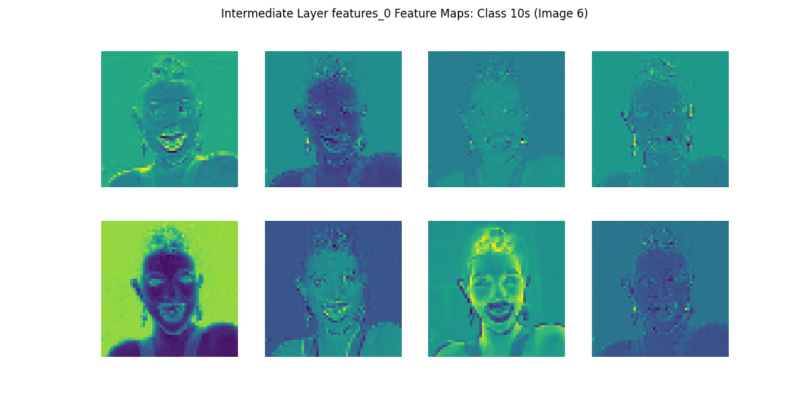 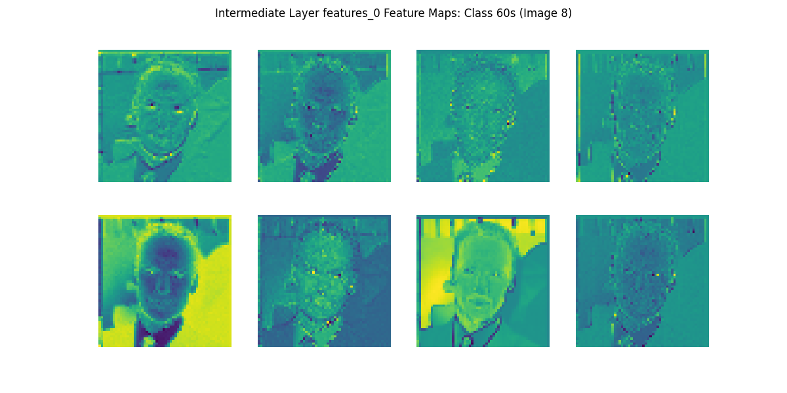
初期段階の特徴マップでは,抽象化が進んでおらず入力画像に近い計上や明暗が捉えられています.この段階ではまだ「顔」や「目」「鼻」などの明確な概念は捉えられておらず, 画素レベルでの色・輝度・エッジなど, 低レベルな特徴(輪郭や縞模様, 明るい部分や暗い部分など)を抽出している段階に見えます.
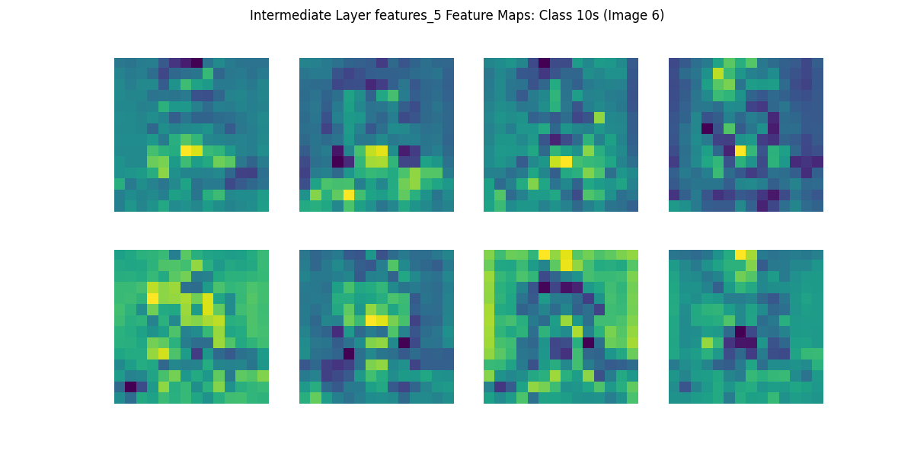 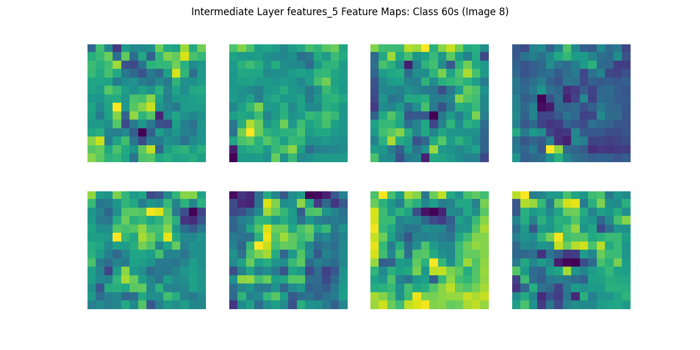
第5層では,人物の顔そのものが明示的に分かるわけではありませんが,明暗や模様の分布がより粗い粒度(低い解像度)で表現され,モザイク状に見える特徴マップが示唆するように,特定の領域に強く反応するフィルタも存在しています.
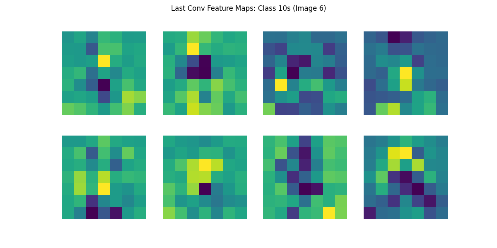 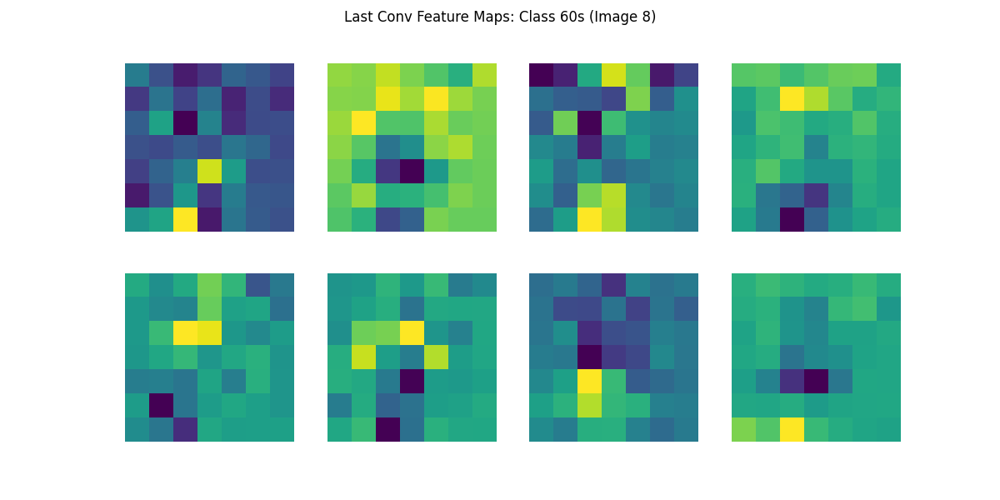
最終層になると,抽象化が進み人間の目が見ても元の画像との直接的な対応は難しくなりますが, ネットワークにとって意味のある特徴(特定の配置や模様, 対象物の概形など)がチャネルごとに表現されていると考えられます. このレベルでは,すでに「顔」のような意味的な概念へのマッピングが進み,分類タスクで役立つ特徴が凝縮されている段階です.
特徴マップによって学習したCNNがどのような判断を行っているかを可視化することができました.しかし,特徴マップ自体を人間が解釈することによって,CNNの判断基準を説明することは困難です.そのような問題を解決するための手法として,人間がCNNの判断を説明できるように特徴マップの情報を画像にマッピングするいくつかの技法があります.
Grad-CAM(Gradient-weighted Class Activation Mapping)Grad-CAMは, 最終的な予測クラスに対する勾配情報を, CNNの中間層(通常は最後の畳み込み層)における特徴マップに結びつけることで,画像のどの領域が最もクラス識別に寄与しているかを可視化する手法です. 具体的には,対象クラスに対する損失の勾配を特徴マップに逆伝播させ,各チャネルごとの重みを算出し, その重みを特徴マップ上で合計することで,元画像上にクラス特有の関心領域を示すヒートマップを得ます.これにより,ネットワークが最終判断の際に注目した入力画像内の箇所が視覚的に明確になります.Guided BackpropagationGuided Backpropagationは,ネットワーク内部の勾配情報を「正方向のみ」通過できるように制約することで, 入力画像に対してどの画素が予測へ大きく寄与しているかを可視化する手法です. これにより, ネットワーク内部を通る勾配経路を強制的に正の影響のみ残すため,予測クラスを支持する特徴に焦点を当てられます.Guided Grad CAMGrad-CAMとGuided Backpropagationを組み合わせた手法です. CNNモデルが出力した予測に対し, どのピクセルがどの程度そのクラス予測に貢献しているのかをより詳細かつ直感的に可視化することを目指した手法となります.
ここでは10sと60sに限定して,これらの手法を実行してみましょう.
#------------------------------------------------------------------
# Grad-CAM, Guided Backprop, Guided Grad-CAM の実行 (10s, 60sに限定)
#------------------------------------------------------------------
import cv2
# 対象クラスIDとクラス名
target_cam_classes = {0:'10s', 5:'60s'}
# valデータからサンプル画像を取得
base_val_dir = os.path.join(data_dir, 'val')
sample_images = {}
for cls_id, cls_name in target_cam_classes.items():
cls_dir = os.path.join(base_val_dir, cls_name)
img_name = os.listdir(cls_dir)[0]
img_path = os.path.join(cls_dir, img_name)
sample_images[cls_id] = img_path
# Grad-CAM用フック設定
target_layer = model.features[-1]
features = None
gradients = None
def forward_hook(module, input, output):
nonlocal features
features = output
def backward_hook(module, grad_input, grad_output):
nonlocal gradients
gradients = grad_output[0]
forward_h = target_layer.register_forward_hook(forward_hook)
backward_h = target_layer.register_full_backward_hook(backward_hook)
# Guided Backprop用：ConvNeXtはGELUを使用, そのためGELUに対するGuided Backpropを実装
# 出力が正の部分のみ勾配を通す
gelu_outputs = {} # moduleをキーにしてforward出力を保存
def gelu_forward_hook(module, input, output):
gelu_outputs[module] = output
def gelu_backward_hook(module, grad_input, grad_output):
# grad_input: tuple of gradients wrt input of gelu
# grad_output: tuple of gradients wrt output of gelu
# guided backprop: 出力が正の位置のみ勾配を通す
out = gelu_outputs[module]
# outと同じ形状で, out>0のとこだけ1, それ以外0
positive_mask = (out > 0).float()
# grad_output[0]に対して, positive_maskをかけて負の領域をカット
guided_grad = grad_output[0] * positive_mask
return (guided_grad,)
# GELU層にフックを登録
guided_hooks = []
for m in model.modules():
if isinstance(m, nn.GELU):
fh = m.register_forward_hook(gelu_forward_hook)
bh = m.register_backward_hook(gelu_backward_hook)
guided_hooks.append(fh)
guided_hooks.append(bh)
def preprocess_image(img_path):
img = Image.open(img_path).convert('RGB')
img = img.resize((224, 224))
img_tensor = data_transforms['val'](img).unsqueeze(0).to(device)
return img, img_tensor
def generate_gradcam():
pooled_gradients = torch.mean(gradients, dim=[0,2,3])
cam = torch.zeros(features.shape[2:], dtype=features.dtype, device=features.device)
for i in range(features.shape[1]):
cam += pooled_gradients[i] * features[0,i,:,:]
cam = cam.cpu().data.numpy()
cam = np.maximum(cam, 0)
if np.max(cam) != 0:
cam = cam / np.max(cam)
return cam
def do_guided_backprop(model, img_tensor, target_class):
# 勾配リセット
model.zero_grad()
img_tensor.grad = None
# forward
output = model(img_tensor)
loss = output[0, target_class]
model.zero_grad()
loss.backward()
guided_grad = img_tensor.grad.data[0].cpu().numpy().transpose(1,2,0)
guided_grad = guided_grad - guided_grad.min()
guided_grad = guided_grad / (guided_grad.max() + 1e-8)
return guided_grad
def apply_colormap_on_image(org_img, cam, alpha=0.5):
H_org, W_org, _ = org_img.shape
cam_resized = cv2.resize(cam, (W_org, H_org))
heatmap = cv2.applyColorMap(np.uint8(255*cam_resized), cv2.COLORMAP_JET)
heatmap = np.float32(heatmap)/255.0
org_img = np.float32(org_img)/255.0
cam_img = heatmap * alpha + org_img
cam_img = cam_img / np.max(cam_img)
return np.uint8(255*cam_img)
def guided_gradcam(guided_grad, cam):
H, W, _ = guided_grad.shape
cam_resized = cv2.resize(cam, (W, H))
guided_gradcam = guided_grad * cam_resized[..., np.newaxis]
guided_gradcam = guided_gradcam - guided_gradcam.min()
guided_gradcam = guided_gradcam / (guided_gradcam.max()+1e-8)
return guided_gradcam
gradcam_dir = 'data/result/gradcam_guided'
if not os.path.exists(gradcam_dir):
os.makedirs(gradcam_dir)
model.eval()
from PIL import Image
for cls_id, img_path in sample_images.items():
# original画像読み込み
org_img, img_tensor = preprocess_image(img_path)
org_img_np = np.array(org_img) # RGB, 224x224
img_tensor.requires_grad = True
# Grad-CAM
model.zero_grad()
output = model(img_tensor)
target_score = output[0, cls_id]
target_score.backward()
cam = generate_gradcam()
# Grad-CAM画像
org_img_cv = org_img_np[:,:,::-1].copy()
gradcam_img = apply_colormap_on_image(org_img_cv, cam)
gradcam_img_rgb = gradcam_img[:,:,::-1]
# Guided Backprop
gb = do_guided_backprop(model, img_tensor, cls_id) # 0-1 float
g_gradcam = guided_gradcam(gb, cam) # 0-1 float
original_uint8 = org_img_np
gradcam_uint8 = gradcam_img_rgb
gb_uint8 = (gb*255).astype(np.uint8)
g_gradcam_uint8 = (g_gradcam*255).astype(np.uint8)
combined = np.hstack([original_uint8, gradcam_uint8, gb_uint8, g_gradcam_uint8])
plt.imsave(os.path.join(gradcam_dir, f'class_{cls_id}_combined.png'), combined)
forward_h.remove()
backward_h.remove()
for h in guided_hooks:
h.remove()
print("Grad-CAM, Guided Backprop, Guided Grad-CAM 完了")10代の写真と,60代の写真を適当に選んで,手法を適用した画像が以下になります.左から元画像,Grad-CAM,Guided Backpropagation,Guided Grad CAMの順に結合されています.
Guided Backpropagationが上手くできていませんが,これは学習が上手くいっていない(6割程度の正答率であること)によるか,コードのミスによるか判断できていません.後ほど確認します.
この結果を見ると,今回の学習済みモデルは,10代では鼻や首,60代では画像の顎や首部分に注目していることが分かります. 現実世界でも女性の年齢などを判断する際に首を見るというのはよく聞く話なので,それなりに説得力がありそうです. 実際の研究では,多くの画像を比較してよりモデルが何に注目しているかを分析することで,多くの示唆を得ることができます.
これまでのコードの全体は以下になります. 特徴マップ以降のために毎回学習するのは大変なので,初回以降は学習をスキップして保存された重みを利用するように分岐が入っています.
import os
import pandas as pd
import matplotlib.pyplot as plt
import numpy as np
import seaborn as sns
import random
# 次元削減用
from sklearn.manifold import TSNE
from sklearn.decomposition import PCA
# CNN用
import torch
import torch.nn as nn
import torch.optim as optim
from torchvision import datasets, transforms, models
from torch.utils.data import DataLoader
from torchvision.models import ConvNeXt_Tiny_Weights
#学習した特徴量を抽出する
def extract_features(model, dataloader, device):
model.eval()
features = []
labels_list = []
with torch.no_grad():
for inputs, labels in dataloader:
inputs = inputs.to(device)
labels = labels.to(device)
outputs = model(inputs)
features.append(outputs.cpu())
labels_list.append(labels.cpu())
features = torch.cat(features, dim=0)
labels = torch.cat(labels_list, dim=0)
return features, labels
# t-SNEによる次元圧縮と散布図の描画
def plot_tsne(train_features, train_labels, path):
# train_featuresとtrain_labelsをnumpyに変換
features_np = train_features.numpy()
labels_np = train_labels.numpy()
# t-SNEによる次元圧縮 (2次元)
tsne = TSNE(n_components=2, random_state=42)
features_2d = tsne.fit_transform(features_np)
# 散布図の描画
plt.figure(figsize=(10, 8))
# 各ラベルに基づいて色分けしてプロット
num_classes = len(np.unique(labels_np)) # クラス数を取得
for label in np.unique(labels_np):
indices = np.where(labels_np == label)
plt.scatter(features_2d[indices, 0]
,features_2d[indices, 1]
,label=f'{(label + 1) * 10}s'
,alpha=0.6)
plt.title('t-SNE of Train Features')
plt.xlabel('t-SNE Component 1')
plt.ylabel('t-SNE Component 2')
plt.legend(title="Age Group")
plt.grid(True)
plt.savefig(path)
plt.close()
# PCAによる次元圧縮と散布図の描画
def plot_pca(train_features, train_labels, path):
# train_featuresとtrain_labelsをnumpyに変換
features_np = train_features.numpy()
labels_np = train_labels.numpy()
# PCAによる次元圧縮 (2次元)
pca = PCA(n_components=2)
features_2d = pca.fit_transform(features_np)
# 散布図の描画
plt.figure(figsize=(10, 8))
# 各ラベルに基づいて色分けしてプロット
num_classes = len(np.unique(labels_np)) # クラス数を取得
for label in np.unique(labels_np):
indices = np.where(labels_np == label)
plt.scatter(features_2d[indices, 0]
,features_2d[indices, 1]
,label=f'{(label + 1) * 10}s'
,alpha=0.6)
plt.title('PCA of Train Features')
plt.xlabel('PCA Component 1')
plt.ylabel('PCA Component 2')
plt.legend(title="Age Group")
plt.grid(True)
plt.savefig(path)
plt.close()
# 乱数シードを設定
def set_seed(seed):
torch.manual_seed(seed)
np.random.seed(seed) # Numpy用の乱数シードを設定
random.seed(seed) # Pythonの標準乱数シードを設定
# 再現性を完全に保証するために以下も設定（ただし、若干のパフォーマンス低下の可能性あり）
torch.backends.cudnn.deterministic = True
torch.backends.cudnn.benchmark = False
def main():
# シードを設定する
#(自分の研究でやる場合は以下の行は消しても問題ない.)
set_seed(2024)
# データのディレクトリ設定
data_dir = 'data/sorted_images_split'
batch_size = 32
num_epochs = 5
num_classes = 6 # 10代, 20代, ..., 60代
# デバイス設定
#GPUが利用できる場合はGPUを使う,そうでない場合はCPUを計算に利用します.
if torch.backends.mps.is_available():
device = torch.device("mps") #Mac GPU
elif torch.cuda.is_available():
device = torch.device("cuda:0") #Win GPU
else:
device = torch.device("cpu") #CPU
print(f'Using device: {device}')
# モデル定義
# ConvNextモデルの読み込みとカスタマイズ
weights = ConvNeXt_Tiny_Weights.IMAGENET1K_V1 # 最新の重みを指定
model = models.convnext_tiny(weights=weights) # ConvNextの小さいモデルを使用
#モデル分類層の最終層(第3層(0,1,2番目))の入力特徴量を取得
num_ftrs = model.classifier[2].in_features
#既に学習されたモデルではクラス数がことなるので ,入力特徴量の数(num_ftrs)はそのまま
#出力をクラス数に変更
model.classifier[2] = nn.Linear(num_ftrs, num_classes)
model = model.to(device)
# データ変換（前処理）
data_transforms = {
'train': transforms.Compose([
transforms.Resize((224, 224)), #画像のリサイズ
transforms.RandomHorizontalFlip(), #画像をランダムに反転
transforms.ColorJitter(brightness=0.2, contrast=0.2), # 色調変化
transforms.ToTensor(), #テンソル(多次元配列)に変換
transforms.Normalize(mean=[0.485, 0.456, 0.406]
,std=[0.229, 0.224, 0.225]), #正規化(本来は値を変更する必要あり.
]),
'val': transforms.Compose([
transforms.Resize((224, 224)),
transforms.ToTensor(),
transforms.Normalize([0.485, 0.456, 0.406]
,[0.229, 0.224, 0.225]),
]),
}
# データセットの読み込み
image_datasets = {x: datasets.ImageFolder(os.path.join(data_dir, x),
data_transforms[x])
for x in ['train', 'val']}
dataloaders = {x: DataLoader(image_datasets[x]
,batch_size=batch_size
,shuffle=True
,num_workers=4) #使用するCore数
for x in ['train', 'val']}
# 毎回学習するの大変なので,学習済みの場合は結果を読み込む
if os.path.exists('data/result/trained_model_weights.pth'):
print("学習済みデータのロード中")
model.load_state_dict(torch.load('data/result/trained_model_weights.pth', map_location=device))
else:
print("学習開始")
# 損失関数とオプティマイザ
criterion = nn.CrossEntropyLoss() #クロスエントロピー損失
optimizer = optim.Adam(model.parameters() #Adam
,lr=0.0001) #Learning rate (学習率)
#SGDを利用する場合
#optimizer = optim.SGD(model.parameters(), lr=0.001, momentum=0.9)
#結果の記録用
train_losses = []
train_accuracies = []
val_losses = []
val_accuracies = []
results = []
# 学習ループ
for epoch in range(num_epochs):
print(f'Epoch {epoch+1}/{num_epochs}')
print('-' * 10)
for phase in ['train', 'val']:
if phase == 'train':
model.train()
else:
model.eval()
running_loss = 0.0
running_corrects = 0
for inputs, labels in dataloaders[phase]:
inputs = inputs.to(device)
labels = labels.to(device)
optimizer.zero_grad()
with torch.set_grad_enabled(phase == 'train'):
outputs = model(inputs)
_, preds = torch.max(outputs, 1)
loss = criterion(outputs, labels)
if phase == 'train':
loss.backward()
optimizer.step()
running_loss += loss.item() * inputs.size(0)
running_corrects += torch.sum(preds == labels.data)
if phase == 'val': # バリデーション時に予測と実際のラベルを保存
for i in range(len(labels)):
results.append({
'epoch': epoch + 1,
'pred': preds[i].item(),
'acctual': labels[i].item()
})
epoch_loss = running_loss / len(image_datasets[phase])
epoch_acc = running_corrects.float() / len(image_datasets[phase])
print(f'{phase} Loss: {epoch_loss:.4f} Acc: {epoch_acc:.4f}')
if phase == 'train':
train_losses.append(epoch_loss)
train_accuracies.append(epoch_acc.item())
else:
val_losses.append(epoch_loss)
val_accuracies.append(epoch_acc.item())
#------------------------------------------------------------------
#結果の表示
#------------------------------------------------------------------
print('Training complete')
print("Training Losses: ", train_losses)
print("Training Accuracies: ", train_accuracies)
print("Validation Losses: ", val_losses)
print("Validation Accuracies: ", val_accuracies)
# 結果を可視化してCSVファイルに保存
loss_acc = pd.DataFrame({'train_losses':train_losses
,'train_accuracies':train_accuracies
,'val_losses':val_losses
,'val_accuracies':val_accuracies})
plt.title('Losses')
plt.xlabel('Epoch')
plt.ylabel('Losses')
plt.plot(np.arange(num_epochs),loss_acc['train_losses'],c='r',label='train_losses')
plt.plot(np.arange(num_epochs),loss_acc['val_losses'],c='b',label='val_losses')
plt.grid(True)
plt.legend()
plt.savefig('data/result/convnext_loss.png')
plt.close()
plt.title('Accuracies')
plt.xlabel('Epoch')
plt.ylabel('Accuracies')
plt.plot(np.arange(num_epochs),loss_acc['train_accuracies'],c='r',label='train_accuracies')
plt.plot(np.arange(num_epochs),loss_acc['val_accuracies'],c='b',label='val_accuracies')
plt.grid(True)
plt.legend()
plt.savefig('data/result/convnext_acc.png')
plt.close()
loss_acc.to_csv('data/result/convnext_loss_acc.csv'
,encoding='utf_8_sig')
results_df = pd.DataFrame(results)
result_max_epochs = results_df[results_df['epoch'] == num_epochs]
result_heatmap = pd.DataFrame(index=np.arange(6)
,columns=np.arange(6)
,data=0)
#実際のラベルに対する予測された回数をカウント
for i in result_max_epochs.index:
p = result_max_epochs.at[i,'pred']
a = result_max_epochs.at[i,'acctual']
result_heatmap.at[p,a] +=1
#列相対度数に変換
for c in result_heatmap:
result_heatmap[c] = result_heatmap[c] / result_heatmap[c].sum()
#ヒートマップとして表現
sns.heatmap(result_heatmap
,annot=True)
plt.ylabel('pred')
plt.xlabel('acctual')
plt.savefig('data/result/pred_acctual_heatmap.png')
plt.close()
results_df.to_csv('data/result/pred_acctual.csv'
,encoding='utf_8_sig')
# 特徴量を取得する
train_features, train_labels = extract_features(model, dataloaders['train'], device)
val_features, val_labels = extract_features(model, dataloaders['val'], device)
#散布図の描画
plot_tsne(train_features, train_labels,'data/result/convnext_tsne.png')
plot_pca(train_features, train_labels,'data/result/convnext_pca.png')
# (毎回学習するのは大変なので)特徴量を表示または保存しておく
torch.save(model.state_dict(), 'data/result/trained_model_weights.pth')
#------------------------------------------------------------------
#特徴マップの描画
#------------------------------------------------------------------
# 中間層のフックを設定する層リストの設定例
target_layers_indices = [0, 5, -1] # お好みで変更可能
# フックで取り出した特徴マップを保持する辞書
intermediate_feature_maps = {}
def get_intermediate_hook(name):
def hook_fn(m, input, output):
# output: [B, C, H, W]
intermediate_feature_maps[name] = output.detach().cpu()
return hook_fn
# 対象層にフックを登録
hooks = []
for idx in target_layers_indices:
layer_name = f"features_{idx}"
h = model.features[idx].register_forward_hook(get_intermediate_hook(layer_name))
hooks.append(h)
# --- 最後の畳み込み層のフック ---
feature_maps_last_conv = []
def get_feature_map_hook_conv(self, input, output):
feature_maps_last_conv.append(output.detach().cpu())
hook_conv = model.features[-1].register_forward_hook(get_feature_map_hook_conv)
# 抽出したいクラス (0:10s,1:20s,...,5:60s)
target_classes = [0,1,2,3,4,5]
# 各クラスから9枚ずつ取得するためのカウンタ
images_per_class = 9
extracted_counts = {cls: 0 for cls in target_classes}
# 保存ディレクトリの用意
base_dir = 'data/result/feature_maps'
if not os.path.exists(base_dir):
os.makedirs(base_dir)
# クラスごとのフォルダを作成 (10s～60s)
for cls in target_classes:
class_label_str = f"{(cls+1)*10}s"
class_dir = os.path.join(base_dir, class_label_str)
if not os.path.exists(class_dir):
os.makedirs(class_dir)
# 中間層用のサブフォルダを用意
for idx in target_layers_indices:
layer_name = f"features_{idx}"
layer_dir = os.path.join(class_dir, layer_name)
if not os.path.exists(layer_dir):
os.makedirs(layer_dir)
# 最終Conv層用のフォルダ
last_conv_dir = os.path.join(class_dir, 'last_conv')
if not os.path.exists(last_conv_dir):
os.makedirs(last_conv_dir)
model.eval()
val_iter = iter(dataloaders['val'])
with torch.no_grad():
# 全クラスが指定枚数分揃うまで繰り返す
while not all(count == images_per_class for count in extracted_counts.values()):
try:
inputs, labels = next(val_iter)
except StopIteration:
# データがなくなったら終了
break
inputs = inputs.to(device)
# フック用リストをクリア
feature_maps_last_conv.clear()
intermediate_feature_maps.clear()
# 順伝播：フックで特徴マップ取得
outputs = model(inputs)
fm_batch = feature_maps_last_conv[0] # [B, C, H, W] 最終Conv層出力
for i in range(inputs.size(0)):
cls = labels[i].item()
if cls in target_classes and extracted_counts[cls] < images_per_class:
class_label_str = f"{(cls+1)*10}s"
class_dir = os.path.join(base_dir, class_label_str)
# 中間層特徴マップ可視化
for idx in target_layers_indices:
layer_name = f"features_{idx}"
fm_intermediate = intermediate_feature_maps[layer_name][i] # shape: [C, H, W]
num_channels_to_plot = min(8, fm_intermediate.shape[0])
fig, axes = plt.subplots(2, 4, figsize=(12, 6))
axes = axes.flatten()
for ch in range(num_channels_to_plot):
ax = axes[ch]
ax.imshow(fm_intermediate[ch].numpy(), cmap='viridis')
ax.axis('off')
plt.suptitle(f'Intermediate Layer {layer_name} Feature Maps: Class {(cls+1)*10}s (Image {extracted_counts[cls]+1})')
layer_dir = os.path.join(class_dir, layer_name)
out_path = os.path.join(layer_dir, f'feature_map_{extracted_counts[cls]+1}.png')
plt.savefig(out_path)
plt.close()
# 最終Conv層特徴マップ可視化
fm = fm_batch[i] # shape: [C, H, W]
num_channels_to_plot = min(8, fm.shape[0])
fig, axes = plt.subplots(2, 4, figsize=(12, 6))
axes = axes.flatten()
for ch in range(num_channels_to_plot):
ax = axes[ch]
ax.imshow(fm[ch].numpy(), cmap='viridis')
ax.axis('off')
plt.suptitle(f'Last Conv Feature Maps: Class {(cls+1)*10}s (Image {extracted_counts[cls]+1})')
last_conv_dir = os.path.join(class_dir, 'last_conv')
out_path = os.path.join(last_conv_dir, f'feature_map_{extracted_counts[cls]+1}.png')
plt.savefig(out_path)
plt.close()
extracted_counts[cls] += 1
if all(count == images_per_class for count in extracted_counts.values()):
break
# フックを削除
hook_conv.remove()
for h in hooks:
h.remove()
print('特徴マップ描画完了')
#------------------------------------------------------------------
# Grad-CAM, Guided Backprop, Guided Grad-CAM の実行 (10s, 60sに限定)
#------------------------------------------------------------------
import cv2
# 対象クラスIDとクラス名
target_cam_classes = {0:'10s', 5:'60s'}
# valデータからサンプル画像を取得
base_val_dir = os.path.join(data_dir, 'val')
sample_images = {}
for cls_id, cls_name in target_cam_classes.items():
cls_dir = os.path.join(base_val_dir, cls_name)
img_name = os.listdir(cls_dir)[0]
img_path = os.path.join(cls_dir, img_name)
sample_images[cls_id] = img_path
# Grad-CAM用フック設定
target_layer = model.features[-1]
features = None
gradients = None
def forward_hook(module, input, output):
nonlocal features
features = output
def backward_hook(module, grad_input, grad_output):
nonlocal gradients
gradients = grad_output[0]
forward_h = target_layer.register_forward_hook(forward_hook)
backward_h = target_layer.register_full_backward_hook(backward_hook)
# Guided Backprop用：ConvNeXtはGELUを使用, そのためGELUに対するGuided Backpropを実装
# 出力が正の部分のみ勾配を通す
gelu_outputs = {} # moduleをキーにしてforward出力を保存
def gelu_forward_hook(module, input, output):
gelu_outputs[module] = output
def gelu_backward_hook(module, grad_input, grad_output):
# grad_input: tuple of gradients wrt input of gelu
# grad_output: tuple of gradients wrt output of gelu
# guided backprop: 出力が正の位置のみ勾配を通す
out = gelu_outputs[module]
# outと同じ形状で, out>0のとこだけ1, それ以外0
positive_mask = (out > 0).float()
# grad_output[0]に対して, positive_maskをかけて負の領域をカット
guided_grad = grad_output[0] * positive_mask
return (guided_grad,)
# GELU層にフックを登録
guided_hooks = []
for m in model.modules():
if isinstance(m, nn.GELU):
fh = m.register_forward_hook(gelu_forward_hook)
bh = m.register_backward_hook(gelu_backward_hook)
guided_hooks.append(fh)
guided_hooks.append(bh)
def preprocess_image(img_path):
img = Image.open(img_path).convert('RGB')
img = img.resize((224, 224))
img_tensor = data_transforms['val'](img).unsqueeze(0).to(device)
return img, img_tensor
def generate_gradcam():
pooled_gradients = torch.mean(gradients, dim=[0,2,3])
cam = torch.zeros(features.shape[2:], dtype=features.dtype, device=features.device)
for i in range(features.shape[1]):
cam += pooled_gradients[i] * features[0,i,:,:]
cam = cam.cpu().data.numpy()
cam = np.maximum(cam, 0)
if np.max(cam) != 0:
cam = cam / np.max(cam)
return cam
def do_guided_backprop(model, img_tensor, target_class):
# 勾配リセット
model.zero_grad()
img_tensor.grad = None
# forward
output = model(img_tensor)
loss = output[0, target_class]
model.zero_grad()
loss.backward()
guided_grad = img_tensor.grad.data[0].cpu().numpy().transpose(1,2,0)
guided_grad = guided_grad - guided_grad.min()
guided_grad = guided_grad / (guided_grad.max() + 1e-8)
return guided_grad
def apply_colormap_on_image(org_img, cam, alpha=0.5):
H_org, W_org, _ = org_img.shape
cam_resized = cv2.resize(cam, (W_org, H_org))
heatmap = cv2.applyColorMap(np.uint8(255*cam_resized), cv2.COLORMAP_JET)
heatmap = np.float32(heatmap)/255.0
org_img = np.float32(org_img)/255.0
cam_img = heatmap * alpha + org_img
cam_img = cam_img / np.max(cam_img)
return np.uint8(255*cam_img)
def guided_gradcam(guided_grad, cam):
H, W, _ = guided_grad.shape
cam_resized = cv2.resize(cam, (W, H))
guided_gradcam = guided_grad * cam_resized[..., np.newaxis]
guided_gradcam = guided_gradcam - guided_gradcam.min()
guided_gradcam = guided_gradcam / (guided_gradcam.max()+1e-8)
return guided_gradcam
gradcam_dir = 'data/result/gradcam_guided'
if not os.path.exists(gradcam_dir):
os.makedirs(gradcam_dir)
model.eval()
from PIL import Image
for cls_id, img_path in sample_images.items():
# original画像読み込み
org_img, img_tensor = preprocess_image(img_path)
org_img_np = np.array(org_img) # RGB, 224x224
img_tensor.requires_grad = True
# Grad-CAM
model.zero_grad()
output = model(img_tensor)
target_score = output[0, cls_id]
target_score.backward()
cam = generate_gradcam()
# Grad-CAM画像
org_img_cv = org_img_np[:,:,::-1].copy()
gradcam_img = apply_colormap_on_image(org_img_cv, cam)
gradcam_img_rgb = gradcam_img[:,:,::-1]
# Guided Backprop
gb = do_guided_backprop(model, img_tensor, cls_id) # 0-1 float
g_gradcam = guided_gradcam(gb, cam) # 0-1 float
original_uint8 = org_img_np
gradcam_uint8 = gradcam_img_rgb
gb_uint8 = (gb*255).astype(np.uint8)
g_gradcam_uint8 = (g_gradcam*255).astype(np.uint8)
combined = np.hstack([original_uint8, gradcam_uint8, gb_uint8, g_gradcam_uint8])
plt.imsave(os.path.join(gradcam_dir, f'class_{cls_id}_combined.png'), combined)
forward_h.remove()
backward_h.remove()
for h in guided_hooks:
h.remove()
print("Grad-CAM, Guided Backprop, Guided Grad-CAM 完了")
#------------------------------------------------------------------
#スクリプトとして実行された場合(python convnext.py)で実行された場合に,
# if __name__ == '__main__': 以下のみが実行される.
# 並列処理(multiprocessing)を行う場合にこのようにしないと,
# 各処理ですべて同じコードが実行されるため,無限ループなどが起きる.
if __name__ == '__main__':
main()yakagika